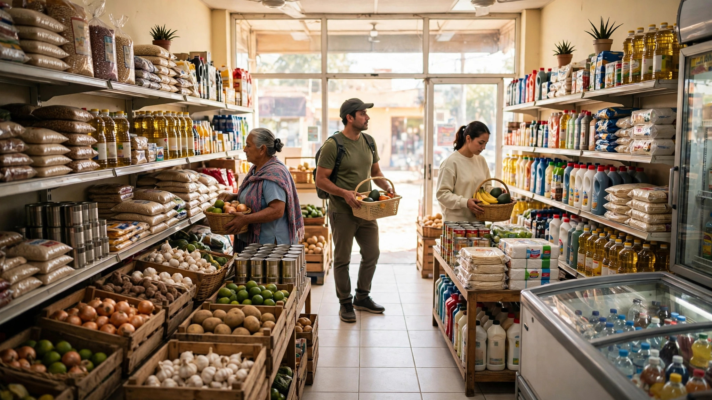
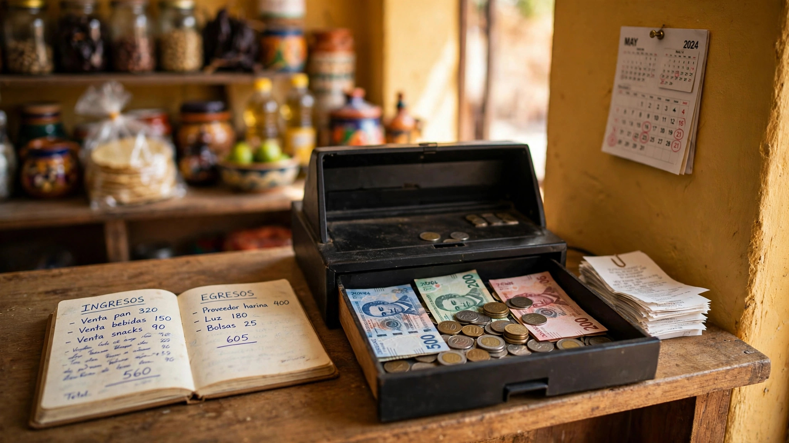
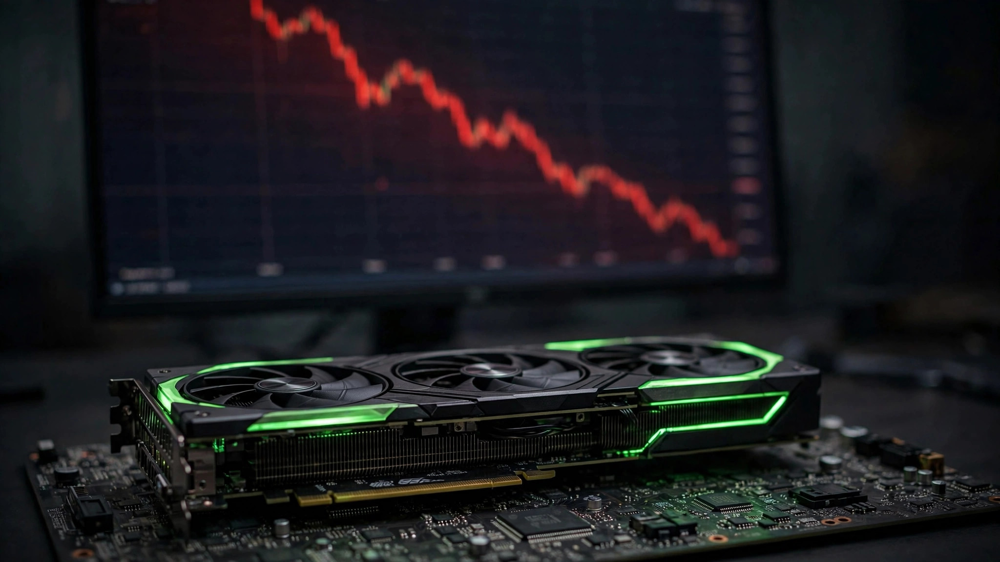
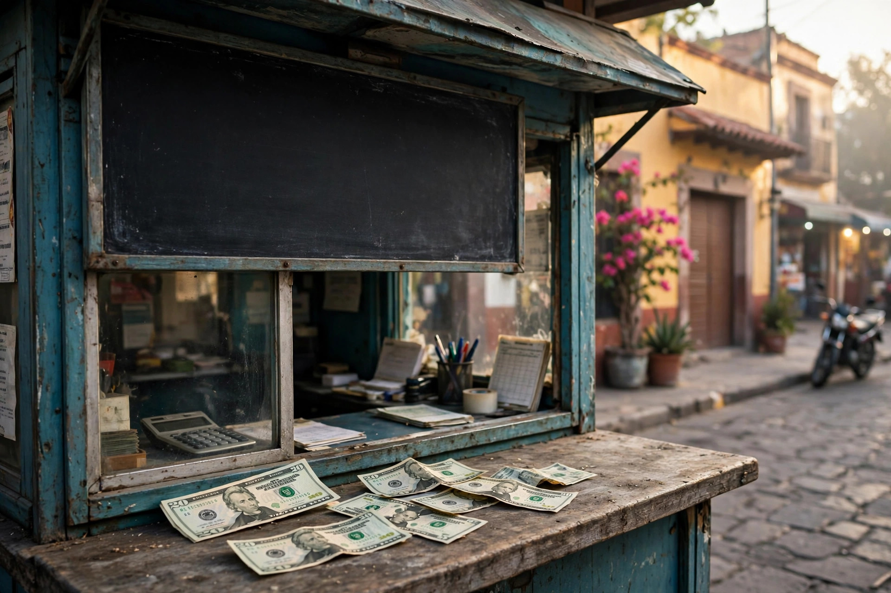
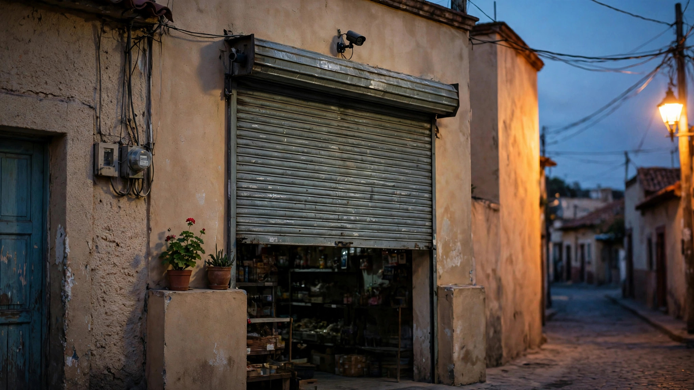
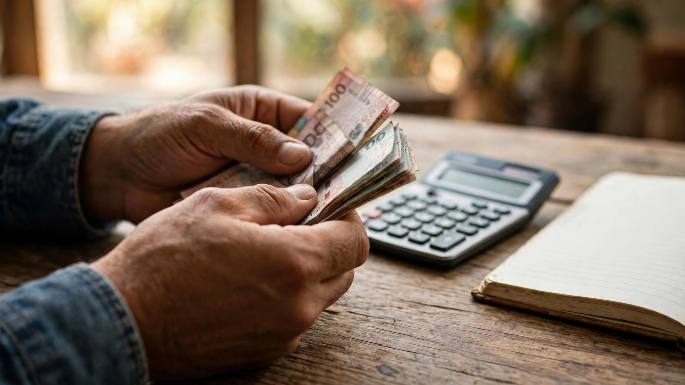

Tu negocio no necesita más clientes. Necesita que los que ya tienes, vuelvan.
Registra a tus clientes en menos de 10 segundos, dales su tarjeta digital con QR y deja que Frecliente analice tus visitas: te dice a quién felicitar, a quién invitar de vuelta y cuándo hacer una promoción. Sin internet y sin complicaciones.
Para Android Funciona sin internet Tus datos quedan en tu teléfono
Mi negocio
PANEL · ESTA SEMANA
128
visitas esta semana
+18% vs. la semana pasada
LMXJVSD
Meta semanal · 50 visitas¡Cumplida!
Consejo de hoy
Tu mejor cliente no viene desde el martes. Mándale su tarjeta por WhatsApp e invítalo a volver.
Tus horas fuertes
Registro
Panel
Escáner
Directorio
Ajustes
Así de fácil: tres pasos
Sin tarjetas de cartón que se pierden, sin sellos y sin libretas. En menos de un minuto tu primer cliente ya tiene su tarjeta digital.
1
Registra al cliente
Escribe su nombre y su celular en la pestaña Registro. En menos de 10 segundos queda registrado con su propio ID, por ejemplo FRE-0001.
2
Entrégale su tarjeta con QR
Su tarjeta digital se genera sola y se la compartes por WhatsApp como imagen, con su nombre, su ID y su código QR. Puedes elegir sus colores y textura.
3
Escanea en cada visita
Cuando vuelva, apunta la cámara a su QR desde la pestaña Escáner y la visita se suma al instante. También puedes sumarla a mano desde su perfil.
El Panel: tu negocio, en números claros
Frecliente lee tus visitas y te las explica en español sencillo: qué va bien, quién está dejando de venir y qué puedes hacer hoy.
Visitas de hoy y de la semana
El número grande del Panel, comparado contra el periodo anterior, con su gráfica de visitas por día.
Días y horas con más gente
Un mapa de calor con tus días y horas fuertes, para que prepares personal y producto cuando más se vende.
Segmentos en el detalle
En el detalle de cada sección puedes filtrar por Por reactivar, Por subir o Nuevos, para saber exactamente a quién atender primero.
Consejos con el botón 💡
Ideas según tus propios datos — felicitar a tu mejor cliente o recuperar a quien no viene en un mes — y cada consejo te lleva a la pantalla donde se hace.
Meta semanal
Ponte una meta de visitas por semana (50 por defecto, la cambias en Ajustes) y sigue tu avance con una barra de progreso.
Calendario anual
Todo el año en una cuadrícula, con las visitas de cada día y tus días fuertes en color. Pica un día y ve sus estadísticas de ese día.
Niveles que premian al que más vuelve
Según su frecuencia, cada cliente sube de nivel y su medalla aparece en su tarjeta y en su perfil. Cuando alguien sube, la app lo celebra con animación y confeti.
Cobre
El nivel de arranque: clientes que ya te conocen y están formando el hábito de volver.
Plata
Tus clientes frecuentes, los que ya pasan seguido y sostienen la semana.
Oro
El 10% que más te visita. En el Panel ves la tabla de los últimos ascensos y descensos de nivel.
Por qué Frecliente
Conseguir un cliente nuevo cuesta mucho más que hacer volver a uno que ya te conoce. Por eso existe Frecliente: registras a tu cliente en menos de 10 segundos, le das su tarjeta digital con QR, y cada vez que vuelve, tú solo escaneas. Así de fácil.
Pero Frecliente no es solo una lista de nombres y teléfonos. Analiza tus visitas y te dice lo que de verdad importa: quiénes son tus mejores clientes, cuáles son tus días y horas más fuertes, quiénes dejaron de venir y quiénes son nuevos. Y con eso te da consejos concretos: a quién felicitar, a quién invitar de vuelta y cuándo conviene hacer una promoción.
En pocas palabras: tus datos se convierten en un plan. Un plan para retener a tus clientes, vender más y dejar de adivinar.
Todo sin internet, sin cursos y sin complicaciones. Tus datos viven en tu teléfono y tú decides qué hacer con ellos.
Planes: empieza gratis y crece cuando lo necesites
Frecliente es gratis para empezar. Si tu negocio crece y necesitas registrar más clientes y proteger tu información, Pro te quita el límite y respalda tus datos en tu propio Google Drive.
Plan Gratis
$0 para siempre
Para probar Frecliente y llevar el control de tus primeros clientes.
Hasta 20 clientes registrados.
Tarjetas con QR, Panel, niveles y consejos: todo lo esencial incluido.
Sin respaldo: tus datos viven solo en tu teléfono.
Plan Pro
7 días gratis
$199 MXN al año
Para negocios que ya viven de su clientela y no quieren perderla. Pruébalo 7 días gratis antes de pagar.
Clientes ilimitados, sin tope de registro.
Respaldo en tu Google Drive: si cambias o pierdes tu teléfono, recuperas a tus clientes y sus visitas.
Exportación en PDF con filtros: reportes por periodo, nivel o cliente.
7 días gratis de prueba, sin pagar nada por adelantado.
Comparativa de planes
Característica
Gratis
Pro
Precio
Gratis
$199 MXN al año, con 7 días gratis de prueba
Clientes registrados
Hasta 20 clientes
Ilimitados
Tarjetas con QR, Panel y niveles
Incluidos
Incluidos
Respaldo de tus datos
Sin respaldo: todo queda solo en tu teléfono
En tu cuenta de Google Drive
Exportación en PDF
—
Con filtros por periodo, nivel o cliente
Prueba gratuita
—
7 días gratis de Pro
El respaldo de Pro se guarda en tu propia cuenta de Google Drive, no en servidores de Frecliente: tus datos siguen siendo tuyos. En el plan Gratis no hay respaldo, así que si cambias de teléfono conviene pasarte a Pro antes o exportar tus clientes en PDF desde la app (solo con Pro).
Último consejoTu dinero
El colchón de tu negocio: aparta un poco de cada venta
Todo negocio tiene semanas malas: se descompone algo, sube la mercancía o simplemente no entra gente. Si todo lo que entra se gasta en el momento, la primera semana mala te deja sin nada para reponer. Por eso…
Si eres nuevo, aquí está todo: las cinco pestañas de la app en orden — Registro, Escáner, Panel, Directorio y Ajustes — con cada botón y cada sección explicados en sencillo, y además lo que vive fuera de la app: los widgets y la burbuja flotante.
1
Registro
Donde nace cada cliente: lo das de alta una vez y desde ahí su tarjeta y sus visitas se llevan solas.
Registrar cliente
Escribe su nombre y su celular y en menos de 10 segundos queda registrado, con su tarjeta digital con QR y su ID — por ejemplo FRE-0001 — generados al momento, así que lo captas en caja, sin papeles ni libretas.
Importar desde contactos
Con el botón “Importar desde contactos” tomas los contactos de tu teléfono, con su nombre y su celular, y los registras de una vez, sin tener que escribir uno por uno a tus clientes de siempre.
Tarjeta personalizable
Elige un color sólido entre 17 colores en 5 familias y una textura — Lisa, Puntitos, Líneas, Corazones o Lunas — con vista previa en vivo mientras la armas. Es una sola tarjeta, la original, con el código QR a la derecha, para que se vea de tu negocio y no genérica, y el cliente la presuma.
Contador de clientes
En el plan Gratis ves cuántos clientes llevas — por ejemplo 14 de 20 — y cuánto espacio te queda libre, así sabes cuándo te conviene pasarte a Pro antes de quedarte sin espacio.
2
Escáner
Donde se suma cada visita: rápido, sin errores y aunque el QR falle o el cliente olvide su tarjeta.
Escanear QR
Apunta la cámara al QR de la tarjeta y la visita se suma al instante, sin errores, con animación de éxito y el perfil del cliente abierto, para que el cliente vea que su visita contó.
Buscar manual (lupa)
Si el QR no se lee, toca la lupa y busca al cliente por su nombre, su celular o su ID, para no perder nunca una visita por un QR dañado o con poca luz.
Sumar visita manual
Desde el perfil del cliente, con el botón “Sumar visita manual”, agregas su visita a mano y así registras visitas aunque el cliente haya olvidado su tarjeta.
3
Panel
Tu negocio en números claros: no solo guarda tus visitas, las analiza y te dice qué hacer con ellas.
Número grande y comparativa
Las visitas de hoy y de la semana, comparadas contra el periodo anterior y con su gráfica de visitas por día, para que sepas de un vistazo si vas subiendo o bajando.
Dona de retención
Una dona que muestra cuántos clientes del periodo anterior volvieron en este periodo: la retención es el número que dice si tu negocio retiene o solo atrae.
Barras de frecuencia
Cuántos clientes vinieron 1 vez, cuántos de 2 a 4 veces y cuántos 5 veces o más en todo tu historial, para que veas quiénes son de una sola vez y quiénes ya son fieles.
Segmentos en el detalle
En el detalle de cada sección puedes filtrar por Por reactivar, Por subir o Nuevos, para saber exactamente a quién atender primero.
Tabla de ascensos y descensos
Los últimos clientes que subieron o bajaron de nivel, para que celebres a los que suben y recuperes a los que bajan antes de perderlos.
Meta semanal
50 visitas por defecto — la cambias en Ajustes, en “Mi negocio” —, con su barra de progreso para seguir tu avance y tener una meta clara cada semana.
Empieza aquí
Al abrir el Panel por primera vez, una tarjetita te guía en 3 pasos: registra tu primer cliente, suma tu primera visita y ponte tu meta semanal. Se marca sola con tus datos reales y desaparece cuando terminas.
Detalle con pastillas
Toca una sección del Panel (Hoy, Semana o Mes) y filtra por rango (Día, Semana, Mes, Año), cliente (Todos, Oro, Plata, Cobre), segmento (Por reactivar, Por subir, Nuevos) y métrica (Visitas, Nuevos, Activos).
Horas del día (panel dorado)
Tus visitas por hora en un panel dorado: la curva, los puntos por hora y el pico del día.
Resumen
Al final del Panel: tu retención, lo que destaca, quiénes subieron o bajaron de nivel y los clientes que necesitan atención, con su botón de WhatsApp.
Calendario anual
Todo el año en una cuadrícula, con el número de visitas de cada día y tus días fuertes en color, para ver de un vistazo cómo se comportó cada mes. Pica un día y ve sus estadísticas de ese día.
Consejos con el botón 💡
Ideas según tus propios datos — felicitar a tu mejor cliente, recuperar a quien no viene en un mes —, y cada consejo te lleva a la pantalla donde se hace, porque la app te dice qué hacer y no solo te muestra números. Si quieres, también te llegan como notificaciones hasta 3 veces al día, a las 10:00, 14:00 y 18:00.
Burbuja de consejo dentro de la app
A veces aparece junto al botón 💡 con frases como “¡Mira el nuevo consejo de hoy!”, hasta 3 veces al día cuando entras al Panel — y con “No molestar por hoy” desaparece hasta mañana —, para que no te pierdas el consejo sin que te estorbe. No la confundas con la burbuja flotante, que vive sobre tus otras apps y abre el Escáner al tocarla.
4
Directorio
Todos tus clientes en un solo lugar: los encuentras, los conoces y les escribes sin salir de la app.
Buscar, filtrar y ordenar
Busca por nombre, celular o ID; filtra por nivel (Cobre, Plata, Oro) o solo los Por reactivar; y ordena la lista como quieras, para encontrar a cualquier cliente en segundos.
Perfil del cliente
Sus estadísticas, su gráfica de la semana y del mes, su mapa de calor y su calendario mensual — pica un día y ves sus visitas de ese día —, todo para que conozcas a cada cliente antes de atenderlo.
Editar cliente (lápiz)
Con el lápiz de su perfil cambias su nombre, su teléfono y el color y la textura de su tarjeta — su ID no se puede cambiar —, así corriges errores sin borrar al cliente ni su historial.
Compartir tarjeta por WhatsApp
Desde su perfil se envía su tarjeta como imagen, con su nombre, su ID y su QR — sin el número de visitas —, para que el cliente la guarde en su celular y la traiga siempre.
Mensaje directo por WhatsApp
Un botón que abre directo el chat de ese cliente en WhatsApp, para que le escribas sin buscarlo en tus contactos.
Mensajes a un grupo
Elige un grupo — Todos, Oro, Plata, Cobre, Top, Por reactivar o Nuevos — o mantén presionado un contacto para elegir varios a mano; usa uno de los 10 mensajes predefinidos, edítalo a tu gusto, y se envían uno por uno por WhatsApp con su contador de enviados, así avisas una promoción o invitas de vuelta a muchos clientes sin escribirles uno por uno.
Niveles Cobre, Plata y Oro
Según su frecuencia, cada cliente sube de nivel y su medalla aparece en su tarjeta, en su perfil y en el Directorio; cuando sube, la app lo celebra con animación y confeti, y el cliente siente que progresa y vuelve por su siguiente nivel.
Recompensa cada 10 visitas
La tarjeta lleva la cuenta sola y el cliente ve su progreso hacia las 10 visitas, así tienes una razón concreta para que el cliente vuelva una vez más.
5
Ajustes
Donde la app se hace tuya: tu marca, tu meta, tu plan y la seguridad de tus datos.
Mi plan
Ves si estás en Gratis — hasta 20 clientes — o en Pro — clientes ilimitados, $199 MXN al año, con 7 días gratis para probarlo — y puedes mejorar tu plan, sabiendo en todo momento qué tienes y qué te falta, sin sorpresas.
Mi negocio
El nombre de tu negocio y tu meta semanal de visitas en un solo lugar: con el botón “Editar nombre” pones tu marca, y tocas el número de la meta para cambiarla (50 por defecto).
Preferencias
Tema, widgets, burbuja flotante y avisos en una sola sección: elige entre tema Claro, Oscuro o Azul; agrega los widgets Hoy, Semana y Calendario mensual a tu pantalla principal; activa la burbuja flotante para abrir el Escáner desde cualquier pantalla; y decide si los consejos te llegan como notificaciones, hasta 3 al día.
Mis datos
Exporta tus clientes y visitas en PDF con filtros por periodo, nivel o cliente (solo con Pro) y respalda todo en tu propia cuenta de Google Drive con el botón “Respaldar ahora” (solo con Pro, el respaldo no es automático).
Ayuda
Las respuestas a las dudas más comunes, en cajitas que se despliegan al tocarlas, para que resuelvas tus dudas sin esperar a nadie.
Aprender en la web
Una tarjeta fija al final de Ajustes, siempre visible: te lleva a los consejos de frecliente.com y a nuestras redes, Facebook e Instagram.
6
Pantalla principal
Lo que Frecliente hace sin que abras la app.
Widget Hoy
Tus visitas de hoy, tu mejor hora y cuántos clientes activos llevas, en un widget chico (4×1) en tu pantalla principal. Se actualiza cada vez que usas la app. Al picarlo abre el Panel en el día.
Widget Semana
El total de visitas de la semana y tu mejor día, con la ruta de los 7 días (4×2). Al picarlo abre el Panel en la semana.
Widget Calendario mensual
El mes con las visitas de cada día, solo con color, en un widget (4×2). Se actualiza cada vez que usas la app. Al picarlo abre el calendario anual.
Burbuja flotante
La mascota flotando sobre tus otras apps: la tocas y se abre el Escáner. Se activa en Ajustes, en “Preferencias”, y pide el permiso “Mostrar sobre otras apps”.
Consejos para tu negocio
Ideas cortas y prácticas para que tus clientes vuelvan más seguido, sin gastar de más. Pensadas para negocios chicos como el tuyo.
Fidelización
Cómo hacer que un cliente vuelva (sin gastar más)
A nadie le gusta sentirse un cliente más. Cuando alguien entra a tu negocio y lo saludas por su nombre, la visita cambia: se siente conocido y bienvenido. Ese detalle no cuesta nada y es el primer paso para que vuelva.
El segundo paso es registrar cada visita. Si anotas quién vino y cuándo, dejas de adivinar y empiezas a conocer a tu clientela: quién viene cada semana, quién solo pasó una vez y quién era frecuente y dejó de venir.
También ayuda premiar la constancia. No necesitas regalar mucho: un café, un descuento chico o un detalle en su visita número diez le dice al cliente "aquí sí me toman en cuenta".
Y cuando alguien lleva tiempo sin venir, avísale que lo extrañas. Un mensaje corto por WhatsApp, con su tarjeta y una invitación a volver, recupera más clientes de los que imaginas. Con Frecliente todo esto sale de tu propio registro de visitas, sin libretas ni buena memoria.
Recompensas
Por qué premiar cada 10 visitas funciona
Una meta clara cambia el comportamiento. Cuando el cliente sabe que a la visita número diez hay premio, cada visita cuenta como un paso hacia algo, y volver deja de ser un hábito flojo para volverse un plan.
Además, el progreso visible motiva. Ver que ya lleva 6 de 10 visitas empuja a completar la tarjeta, igual que pasa con las tarjetas de sellos de cartón… solo que la digital no se pierde ni se queda en otro pantalón.
¿Y el premio? No tiene que ser caro. Un café gratis, un postre, un 20% de descuento o el producto más vendido de tu negocio bastan. Lo que el cliente valora es el reconocimiento, no el precio del regalo.
Para tu negocio la cuenta sale bien: es más barato que un cliente fiel vuelva diez veces que conseguir diez clientes nuevos. Por eso en Frecliente la tarjeta lleva la cuenta sola y el premio lo decides tú.
Tu Panel
Conoce tus mejores días con tu Panel
Todos los negocios tienen días fuertes y días flojos, pero no siempre son los que uno cree. En el Panel de Frecliente puedes revisar qué días y qué horas tienes más visitas, con gráficas, el panel dorado de Horas del día y un calendario anual fáciles de leer.
Con esos datos, tus días flojos dejan de ser un problema y se vuelven una oportunidad: ahí es donde conviene lanzar una promoción, un 2x1 o un premio doble de visitas para mover a la gente.
Y en tus horas pico, saber a qué hora se llena te ayuda a atender mejor: tener el producto listo, el personal necesario y la caja sin filas largas.
No necesitas ser experto en números. El Panel te lo explica en español sencillo: cuántas visitas van, si subieron o bajaron contra la semana pasada y quiénes son tus mejores clientes. Tú solo toma una decisión a la semana con esos datos.
Caso de éxito
Caso de éxito: la cafetería que llenó sus martes
Una cafetería chica de barrio tenía un problema conocido: los fines de semana se llenaba, pero los martes casi no entraba nadie. La dueña decidió probar con una tarjeta de fidelización digital para conocer mejor a sus clientes.
Primero registró a sus clientes y empezó a medir sus visitas. En su Panel confirmó lo que sospechaba: el martes era, por mucho, su día más flojo, y sus mejores clientes venían jueves y viernes.
Entonces hizo un movimiento sencillo: los martes, cada visita valía doble para completar la tarjeta de 10 visitas — ella misma anotaba la visita doble a mano —. Lo anunció en una cartulina en la caja y por mensajes a sus clientes registrados.
En pocas semanas el martes dejó de ser el día flojo: los clientes empezaron a guardar su visita de la semana para el martes, y ese día se convirtió en su segundo mejor día. Sin gastar en publicidad: solo midiendo y premiando en el momento correcto.
Tu dinero
El colchón de tu negocio: aparta un poco de cada venta
Todo negocio tiene semanas malas: se descompone algo, sube la mercancía o simplemente no entra gente. Si todo lo que entra se gasta en el momento, la primera semana mala te deja sin nada para reponer. Por eso conviene tener un colchón: un apartado de dinero que solo se toca en emergencias.
No hace falta apartar mucho. Una regla sencilla: de cada venta, aparta el 5% o el 10% antes de gastar en lo demás. Si vendes 1,000 pesos en un día, 50 o 100 van al colchón. Al mes, con ventas de 30,000 pesos, ya tienes entre 1,500 y 3,000 guardados.
El truco es que el colchón viva aparte: otro sobre, otra cuenta o un apartado en la app del banco. Si el dinero está en la misma caja que el gasto diario, se gasta. Lo que no se ve, no se toca.
El colchón no es para promociones ni para darte un gusto: es para lo que no avisa, una reparación, una semana floja o un proveedor que sube el precio. Cuando llegue ese momento, no tendrás que pedir prestado ni cerrar unos días.
Empieza chico: si el 10% se te hace mucho, empieza con el 5% o con una cantidad fija al día, como 50 pesos. Lo importante no es la cantidad, es el hábito. En unos meses tendrás tu primer colchón, y la tranquilidad de saber que una semana mala no te tumba el negocio.
Blog
Categoría:

Negocios
Tiendas 3B vendió 28 mil millones de pesos en tres meses y ganó 82 centavos por cada mil
Redacción Frecliente · Negocios
Tiendas 3B vendió 28 mil 445 millones de pesos entre julio y septiembre de 2026, 40.3 por ciento más que en el mismo trimestre de 2025, según los resultados de su empresa matriz, BBB Foods. La ganancia neta, sin embargo, fue de apenas 23.3 millones de pesos: unos 82 centavos por cada mil pesos vendidos. La cifra, mínima, marca el regreso a las ganancias después de la pérdida de mil 424 millones de pesos que la cadena registró en el mismo periodo del año pasado.
El modelo es el del descuento duro: precios bajos, catálogo reducido y rotación rápida de la mercancía. De cada mil pesos que entran por la caja, alrededor de 833 se van directo al costo de lo que se vende, según el desglose de sus resultados. Su director general, Anthony Hatoum, dijo en la llamada con analistas que la empresa no se maneja con una meta de margen: la apuesta es vender mucho volumen a precios bajos y mantener los costos bajo control.
El crecimiento no viene solo de abrir tiendas. Las ventas en los establecimientos con más de un año crecieron 20.5 por ciento frente al mismo trimestre de 2025, y dos terceras partes de ese aumento llegaron por más volumen y más clientes, no por subir precios. En los primeros nueve meses del año, la cadena acumuló ingresos por 77 mil 343 millones de pesos, 37.7 por ciento más que en 2025, y generó 7 mil 51 millones de pesos de flujo de efectivo operativo, 127.8 por ciento más que el año anterior.
La expansión sigue a ritmo de gigante: 141 tiendas netas en el trimestre, 3 mil 765 en total, y 603 en los últimos doce meses, apenas 99 menos que las 702 que sumó OXXO en el mismo periodo. La empresa abrió además cuatro centros de distribución en el trimestre y llegó a 25 regiones logísticas, con una meta de entre 590 y 630 aperturas netas para todo 2026.
La presión se siente en el sector. FEMSA respondió con Bara, su cadena de descuento, que llegó a 898 tiendas y creció 10.3 por ciento en ventas de tiendas comparables. OXXO, con 24 mil 759 tiendas, creció 9.2 por ciento en el mismo indicador. Las tiendas viejas de 3B crecen más del doble de rápido que las de OXXO, pero con un margen tan delgado que cualquier aumento de costos se come la ganancia casi completa.
Historias
Nintendo: la empresa que nació vendiendo cartas en 1889 y terminó vendiendo videojuegos a todo el mundo
Redacción Frecliente · Historias
El 23 de septiembre de 1889, en Kioto, Fusajiro Yamauchi abrió un pequeño taller para fabricar hanafuda, las cartas tradicionales japonesas decoradas con flores, de 48 cartas por mazo. La empresa se llamó Nintendo Koppai. Las cartas eran un negocio modesto y artesanal: se hacían a mano, con papel de corteza de morera, y se vendían sobre todo en casas de juego. Nadie en ese taller podía imaginar que 137 años después esa misma empresa estaría vendiendo consolas en todo el planeta.
El cambio llegó con su nieto, Hiroshi Yamauchi, que tomó la presidencia en 1949. Primero modernizó las cartas —en 1953 Nintendo fue la primera empresa de Japón en fabricar naipes de plástico— y luego, en los años sesenta, probó negocios de todo tipo: una empresa de taxis, arroz instantáneo y juguetes. Casi todos fracasaron, pero los juguetes le abrieron la puerta a la electrónica. En los setenta Nintendo entró a los videojuegos, y en 1981 un joven diseñador llamado Shigeru Miyamoto creó Donkey Kong, el juego que presentó a Mario al mundo.
En 1983, justo cuando la industria del videojuego se desplomaba en Estados Unidos por la crisis de ese año, Nintendo lanzó en Japón su consola Famicom, que llegó a América como la Nintendo Entertainment System. La consola devolvió la confianza a las tiendas y a los jugadores, y Nintendo se quedó con el mercado: después vinieron la Game Boy en 1989, la Wii en 2006, que vendió más de 100 millones de unidades llevando el videojuego a las salas de las casas, y la Switch en 2017, que se puede usar como consola de casa y como portátil.
Hoy la Switch original suma 157.20 millones de consolas vendidas y su sucesora, la Switch 2, lanzada en junio de 2025, ya llegó a 26.35 millones a septiembre de 2026, según los propios resultados de la empresa. Nintendo ya no vive solo de las consolas: la película de Super Mario Bros. de 2023 recaudó más de 1,300 millones de dólares en taquilla, y en octubre de 2024 la empresa abrió el Museo Nintendo en Kioto, en su antigua fábrica de cartas. En la primera mitad de su año fiscal, de abril a septiembre de 2026, Nintendo vendió 966,000 millones de yenes y ganó 216,500 millones de yenes de utilidad operativa.
El caso muestra cómo se construye el dinero detrás de un personaje: Nintendo no vende solo aparatos, vende juegos y personajes que la gente reconoce en cualquier país —Mario, Zelda, Pokémon— y cada consola nueva vuelve a vender esos mismos mundos a millones de hogares. De un taller de cartas hechas a mano a una de las empresas de entretenimiento más grandes del mundo, el negocio cambió de producto tres veces, pero siempre vendió lo mismo: jugar en familia.

Economía
Flujo de caja: por qué un negocio puede vender mucho y aun así quedarse sin dinero
Redacción Frecliente · Economía
El flujo de caja es, en palabras simples, el dinero que entra y sale de un negocio en un periodo: lo que se cobra por las ventas, menos lo que se paga por renta, mercancía, sueldos e impuestos. No es lo mismo que la ganancia: un negocio puede registrar ventas altas en sus cuentas y, al mismo tiempo, no tener efectivo en la caja para pagar lo que vence esa semana.
La diferencia está en los tiempos. Muchas ventas se cobran a 30 o 60 días, mientras que la renta, la nómina y los proveedores se pagan antes. Por eso un pedido grande puede volverse un problema: hay que comprar material y pagar a los trabajadores ahora, y el dinero del cliente llega después. Es el mismo punto que subrayó Kapital Grupo Financiero durante la Semana Nacional de Educación Financiera de 2026: vender más no garantiza tener liquidez para cubrir los gastos.
En México el tema pesa porque casi todos los negocios son pequeños. Según el INEGI, las micro, pequeñas y medianas empresas son el 99.8% de los establecimientos del país y concentran alrededor del 70% del empleo. Y la rotación es alta: entre mayo de 2019 y mayo de 2023 nacieron 1.7 millones de establecimientos y murieron 1.4 millones, según el Estudio sobre la Demografía de los Negocios (EDN) 2023 del INEGI.
Los estudios históricos del mismo instituto muestran además que, de cada 100 establecimientos que nacen, casi 52 cierran antes de cumplir dos años, y 31 no llegan al primer aniversario. La Asociación de Emprendedores de México (ASEM) señala que la falta de liquidez está entre las principales causas de cierre: alrededor del 35% de las pymes salieron de circulación por esa razón, según la asociación.
Por eso el flujo de caja se mira como un termómetro de la economía cotidiana: cuando los negocios pequeños se quedan sin efectivo, lo primero que se resiente es el empleo y el comercio de la calle, porque son ellos los que dan trabajo a la mayoría de la gente. No es un asunto de contabilidad: es el dinero que circula —o deja de circular— en la economía real.
Actualidad
México rompe cinco récords turísticos: llegaron 74.9 millones de viajeros en nueve meses
Redacción Frecliente · Actualidad
México registró cinco récords turísticos históricos entre enero y septiembre de 2026, niveles que no se veían desde hace más de 26 años. Así lo informó este viernes la secretaria de Turismo, Josefina Rodríguez Zamora, durante la conferencia matutina de la presidenta Claudia Sheinbaum en Palacio Nacional.
De enero a septiembre llegaron al país 74.9 millones de viajeros internacionales, 5.6 por ciento más que en el mismo periodo de 2025. De ellos, 36 millones fueron turistas, es decir, visitantes que pasaron al menos una noche en México, con un aumento de 3.8 por ciento. El gasto de todos esos visitantes dejó una derrama económica de 26 mil 96 millones de dólares, 1.4 por ciento más que el año pasado.
Los cruceros aportaron dos de los cinco récords: los puertos mexicanos recibieron 9 millones de cruceristas, 12.3 por ciento más, y su gasto sumó 778 millones de dólares, 16.3 por ciento más que en 2025. El turismo nacional también creció: 80.6 millones de mexicanos viajaron por el país en esos nueve meses, 713 mil más que el año anterior.
Cada dólar que gasta un visitante es dinero que entra al país y se reparte entre hoteles, restaurantes, transporte, guías y comercios de los destinos. Por eso el turismo pesa tanto en la economía: genera empleo en muchas ciudades y trae divisas, las monedas extranjeras que México necesita para pagar lo que compra fuera. Incluso septiembre, que suele ser uno de los meses más flojos del año, cerró con récord: 3.3 millones de turistas internacionales, 2.7 por ciento más, con un gasto promedio de mil 189 dólares por persona.
Los récords llegan justo cuando arranca el Buen Fin, del 13 al 17 de noviembre, y la Secretaría de Turismo estima que la actividad turística crecerá más de 3 por ciento durante estos días y atraerá a más de 2 millones de turistas. La semana también dejó otra señal del momento que vive el sector: del 10 al 12 de noviembre, Guadalajara fue sede por primera vez de la Feria Internacional de Turismo ITB Américas.
Historias
Nike nació con 1,200 dólares y unos tenis vendidos desde la cajuela de un auto
Redacción Frecliente · Historias
Nike empezó el 25 de enero de 1964 con otro nombre: Blue Ribbon Sports. Sus fundadores fueron Phil Knight, un ex corredor de 26 años recién egresado de la maestría en Stanford, y Bill Bowerman, su entrenador de atletismo en la Universidad de Oregón. La empresa arrancó con 1,200 dólares en el banco y un solo producto que no era suyo: tenis japoneses de la marca Tiger, de la compañía Onitsuka, que Knight había conseguido distribuir en Estados Unidos tras un viaje a Japón. Knight vendía los pares en las competencias de atletismo, desde la cajuela de su Plymouth Valiant. En el primer año, las ventas sumaron 8,000 dólares.
Bowerman era el otro motor del negocio. El entrenador desarmaba los tenis Tiger para hacerlos más ligeros y probaba sus inventos con sus propios atletas. De esa obsesión salió una de las escenas más famosas de la empresa: en 1971, Bowerman vertió hule en la waflera de su esposa para crear una suela con mejor agarre. Ese diseño se convirtió en el Waffle Trainer, lanzado en 1972, y se volvió el primer gran éxito de la marca.
La ruptura con Onitsuka llegó también en 1971. Blue Ribbon Sports decidió fabricar sus propios tenis y necesitaba un nombre nuevo. Lo tomaron de Niké, la diosa griega de la victoria, y el logotipo, la famosa palomita o "swoosh", lo dibujó Carolyn Davidson, una estudiante de diseño gráfico de la Universidad Estatal de Portland, por 35 dólares. Años después, la empresa le regaló 500 acciones como reconocimiento. Nike salió a la bolsa en 1980 y el nombre que nació en una oficina pequeña se volvió una marca mundial.
La apuesta que cambió el tamaño de la empresa llegó en 1984, con un novato de la NBA que todavía no había jugado un partido profesional: Michael Jordan. Nike le ofreció 500,000 dólares al año por cinco años, unos 2.5 millones en total, además de su propia línea de tenis, algo casi inaudito para un recién llegado. La empresa esperaba vender 3 millones de dólares de Air Jordan en tres o cuatro años. En el primer año vendió 126 millones de dólares. Décadas después, solo la marca Jordan generó unos 5,100 millones de dólares en 2022.
Hoy Nike es la empresa de ropa y calzado deportivo más grande del mundo por ingresos, pero sus cuentas muestran que ni los gigantes están exentos de tropiezos: en su año fiscal 2025, terminado en mayo, vendió 46,300 millones de dólares, un 10% menos que los 51,400 millones del año anterior. La distancia entre ese número y los 1,200 dólares de 1964 es la medida de lo que construyeron un corredor que vendía tenis en los estacionamientos y un entrenador que experimentaba con una waflera.

Actualidad
La renuncia de Jensen Huang desploma a Nvidia en Wall Street y arrastra a todo el sector de la inteligencia artificial
Redacción Frecliente · Actualidad
Jensen Huang, cofundador y director ejecutivo de Nvidia durante 33 años, renunció este jueves 12 de noviembre con efecto inmediato. La empresa nombró directora ejecutiva interina a su directora financiera, Colette Kress, y su consejo de administración buscará un sucesor permanente entre candidatos internos y externos. La salida llega días después de que el consejo anunciara una investigación sobre reportes de relaciones extramatrimoniales de Huang, incluida una con una empresaria que, según reportes de prensa, es señalada por la inteligencia de Estados Unidos por presuntos vínculos con los servicios de espionaje de China.
La bolsa reaccionó de inmediato. Las acciones de Nvidia llegaron a caer hasta 14% durante la sesión de este jueves y hacia media mañana moderaban la pérdida a 6.77%, en 161.96 dólares. El golpe venía acumulándose: del cierre de 206.69 dólares del 3 de noviembre a los 173.73 dólares del miércoles, la acción ya había perdido 15.9% en una semana. Desde que se anunció la investigación el domingo, la empresa perdió unos 300 mil millones de dólares de valor de mercado y camina a cerrar por debajo de los 4 billones de dólares por primera vez desde julio de 2025.
El desplome no se quedó en Nvidia. El S&P 500 bajaba 0.38% y el Nasdaq también retrocedía, arrastrados por las empresas ligadas a la inteligencia artificial: CoreWeave caía alrededor de 6% y Nebius 18%. En cambio, sus rivales directos subieron: AMD ganó 1.7% y Broadcom 0.8%, porque el mercado ve una oportunidad para los competidores en medio de la crisis de liderazgo. Y hay una paradoja: a unas 12 veces sus ganancias esperadas, Nvidia cotiza a su valuación más baja desde 2012.
La próxima prueba llega el martes 17 de noviembre, cuando Nvidia publique los resultados de su tercer trimestre fiscal. El mercado espera ingresos de unos 108 mil millones de dólares, 91% más que hace un año, y una ganancia neta de más de 60 mil millones, 89% más. La empresa cerró su año fiscal 2026 con ingresos de 215,938 millones de dólares, 65% más que el ejercicio anterior. Kress, que maneja las finanzas de Nvidia desde 2013, deberá sostener las operaciones mientras se elige al sucesor, en medio de las restricciones de Estados Unidos a la exportación de chips avanzados hacia China.
Para la gente común, el efecto pasa por los mercados: Nvidia es una de las empresas más valiosas del mundo y pieza central del auge de la inteligencia artificial, así que su caída mueve los índices donde están invertidos los fondos de retiro y el ahorro de millones de personas. También deja en duda quién dirigirá a la empresa que fabrica los chips de la inteligencia artificial, justo cuando el sector enfrenta dudas sobre el ritmo de inversión en centros de datos.
Actualidad
WEG invertirá 250 millones de dólares en Hidalgo: 6 mil empleos para fabricar equipos de energía e inteligencia artificial
Redacción Frecliente · Actualidad
La empresa brasileña WEG invertirá 250 millones de dólares en México para construir una nueva planta en Hidalgo, donde fabricará equipos eléctricos para centros de datos e infraestructura de inteligencia artificial. El anuncio se hizo este jueves 12 de noviembre en la conferencia matutina, con la presidenta Claudia Sheinbaum y el secretario de Economía, Marcelo Ebrard. El proyecto se desarrollará entre 2027 y 2030 y contempla 2 mil empleos directos y unos 4 mil indirectos, para un total estimado de 6 mil puestos de trabajo.
La planta producirá generadores, transformadores, motores eléctricos y sistemas de distribución y automatización, equipos que hoy necesitan las fábricas y los centros de datos que guardan y procesan la información de internet. WEG no llega de cero: ya tiene más de 6 mil trabajadores en México, entre ellos 400 ingenieros, además de cuatro parques industriales y una red de más de 500 distribuidores. Con esta ampliación, la empresa busca atender la demanda de energía que trae el crecimiento de la tecnología y los centros de datos en el país.
El gobierno presentó la inversión como parte del Plan México, su estrategia para atraer fábricas y fortalecer la producción nacional. Ebrard adelantó que pronto se darán a conocer nuevas cifras de inversión extranjera directa que, aseguró, muestran niveles históricos y un crecimiento mayor al previsto. Sheinbaum, por su parte, destacó que la inversión en transmisión y distribución de electricidad registra niveles históricos, un rubro directamente ligado a lo que fabricará la nueva planta.
El anuncio llega en un momento mixto para la industria. El INEGI reportó que la actividad industrial cayó 1.4% en septiembre, por lo que el gobierno ha insistido en mostrar proyectos de inversión productiva. Al mismo tiempo, el propio INEGI informó que la economía creció 3.2% en el tercer trimestre de 2026 frente al mismo periodo de 2025, con avances en los tres sectores: primario, secundario y terciario. La inversión de WEG, entonces, aterriza en una economía que crece, pero con una industria que todavía no despega del todo.
Para la gente común, el efecto no es inmediato: los empleos llegarán de forma gradual hasta 2030. Pero una planta de este tamaño mueve mucho más que sus propios trabajadores: necesita proveedores de materiales, transporte, servicios de mantenimiento y mano de obra técnica en Hidalgo y en otros estados. Y fabricar en México equipos que hoy se importan puede abaratar, con el tiempo, la infraestructura eléctrica que usan las empresas y los servicios digitales de todos los días.
Actualidad
Godzilla arrasa en taquilla con una película que costó menos de 20 millones de dólares
Redacción Frecliente · Actualidad
Godzilla Minus Zero, la secuela japonesa de Godzilla Minus One, llegó al primer lugar de la taquilla de Estados Unidos y Canadá en su fin de semana de estreno, del 6 al 8 de noviembre, con 31.6 millones de dólares según las estimaciones de Rentrak. Es el mejor estreno de la historia en Norteamérica para una película de imagen real hablada en otro idioma: superó por mucho el récord que tenía Hero, de Zhang Yimou, con 17.8 millones desde 2002. En todo el mundo, la película sumó unos 63 millones de dólares en su primer fin de semana.
En Japón el fenómeno empezó antes. La película se estrenó allí el 3 de noviembre, el Día de Godzilla, y en su primer día recaudó 910 millones de yenes, unos 5.75 millones de dólares: el mejor primer día de la historia en ese país para una película de imagen real, japonesa o de Hollywood. Al terminar el fin de semana, Japón ya había aportado unos 17 millones de dólares a la recaudación mundial.
Lo que más llama la atención es lo poco que costó hacerla. Según la agencia AP, el presupuesto de producción fue de menos de 20 millones de dólares, unos 19 millones. Con su primer fin de semana en cines, la película ya recaudó más del triple de lo que costó producirla. El contraste con su rival de cartelera es enorme: Ramayana, la superproducción india estrenada el mismo fin de semana, costó unos 210 millones de dólares, más de diez veces más, y recaudó 55 millones en todo el mundo, menos que los 63 de Godzilla.
Buena parte del dinero llegó de las salas más caras. El 74% de la recaudación en Norteamérica salió de formatos premium, y solo las salas IMAX aportaron 12.7 millones de dólares, el 40% del total. La película se rodó pensando en ese formato, y Toho, el estudio japonés que la produjo, la distribuyó en Estados Unidos con su propio sello, GKIDS, apenas tres días después del estreno en Japón.
La cinta es la continuación de Godzilla Minus One (2023), ganadora del Óscar a los mejores efectos visuales, y de nuevo la dirigió Takashi Yamazaki, ambientada en el Japón de 1949, dos años después de la Segunda Guerra Mundial. Con un 90% de críticas positivas en Rotten Tomatoes, sigue en cartelera y su recaudación continúa creciendo.
Actualidad
La industria automotriz tuvo su peor octubre desde la pandemia: la producción cayó 17.7%
Redacción Frecliente · Actualidad
México fabricó 302,803 vehículos ligeros en octubre, 17.7% menos que en el mismo mes de 2025, informó el Instituto Nacional de Estadística y Geografía (Inegi) en su registro de la industria automotriz, publicado el 9 de noviembre. Las exportaciones cayeron 17.9%, a 258,137 unidades. Son las peores caídas para un mes de octubre desde 2021, cuando la pandemia redujo la producción 19.9%.
El golpe viene sobre todo del mercado estadounidense. Estados Unidos compró 202,724 vehículos mexicanos en octubre, 17.6% menos que un año antes, frente a las 245,912 unidades de octubre de 2025. Siete de cada diez autos que México exporta tienen como destino ese país: entre enero y octubre recibió 2,134,474 unidades, el 76.6% del total exportado.
Detrás del frenazo están los aranceles de Estados Unidos. Desde abril de 2025, ese país cobra 25% a los vehículos importados, salvo los que cumplen las reglas de contenido regional del T-MEC. Las armadoras han respondido con reestructuraciones, traslados de producción y paros por cambio de modelo; General Motors, por ejemplo, redujo su producción 45.5% en el mes. La consultora J.D. Power ya recortó su pronóstico de producción total de México para 2026, de 3.9 a 3.8 millones de unidades.
En lo que va del año, la industria acumula 3,254,062 vehículos producidos, 3.9% menos que en enero-octubre de 2025, y 2,786,760 exportados, 3.3% menos. La caída de octubre no se explica solo por los aranceles: también pesa el fin de los incentivos de Estados Unidos para comprar autos eléctricos, que obligó a frenar la producción de varios modelos.
Mientras la producción se contrae, el mercado interno va en sentido contrario: en octubre se vendieron en México 137,395 vehículos ligeros, 3.1% más que un año antes, y en los primeros diez meses del año las ventas suman 1,287,225 unidades, 4.8% más. La industria automotriz es uno de los mayores generadores de empleo y de divisas del país, por lo que un freno de este tamaño se siente más allá de las plantas: en los proveedores, en los empleos que dependen de ellos y en las exportaciones que sostienen la balanza comercial.
Actualidad
La industria mexicana se enfría: cayó 1.4% en septiembre, su mayor baja mensual desde octubre de 2024
Redacción Frecliente · Actualidad
La actividad industrial de México cayó 1.4% en septiembre frente a agosto, su mayor retroceso mensual desde octubre de 2024, informó este miércoles el Instituto Nacional de Estadística y Geografía (Inegi). El descenso interrumpió tres meses consecutivos de avances y dejó el indicador en 101.5 puntos, su nivel más bajo desde marzo, con lo que se perdió el terreno ganado en los últimos cinco meses.
El freno vino de los dos motores más grandes de la industria. La construcción cayó 2% en el mes, su segundo retroceso consecutivo, y las manufacturas bajaron 1.7%, su primera caída tras dos meses de crecimiento. Solo crecieron la minería, con 0.4%, y la generación de energía eléctrica, agua y gas, con 1.4%.
En la comparación con un año antes, la industria todavía crece: 1.4% anual, con lo que suma seis meses consecutivos en positivo. Pero el ritmo se enfrió con fuerza frente al 3.5% registrado en agosto. En lo que va del año, de enero a septiembre, la actividad industrial acumula apenas 1.1% de crecimiento respecto al mismo periodo de 2025, y el tercer trimestre cerró prácticamente plano, con solo 0.1% más que el trimestre anterior.
La industria es donde se produce buena parte de lo que se vende y se exporta, y donde trabajan millones de personas en fábricas, obras y plantas. Cuando la producción se frena, las empresas reciben menos pedidos, se contrata con más cautela y la construcción, que emplea a mucha gente por obra, se resiente primero. El dato llega en un momento en que la economía en conjunto creció 0.9% en el tercer trimestre, por debajo del 1.4% del trimestre anterior, según la estimación del propio Inegi.
El Inegi publicará el dato de octubre en diciembre, y ahí se verá si septiembre fue un tropiezo aislado o el inicio de una desaceleración más larga. Por ahora, la industria sigue en terreno positivo en el año, pero con el freno de mano puesto.
Actualidad
Moody's duplica su pronóstico de crecimiento para México: 2% en 2026, impulsado por la inteligencia artificial
Redacción Frecliente · Actualidad
La calificadora Moody's Ratings elevó sus previsiones de crecimiento para la economía mexicana hasta 2% en 2026 y 2.1% en 2027, según su informe de perspectivas económicas globales divulgado este martes 10 de noviembre. La revisión es amplia: para este año duplica el 1% que pronosticaba antes, y para 2027 sube seis décimas desde el 1.5% previo. La agencia también anticipa que la expansión se mantendrá en 2% en 2028, después del avance de apenas 0.5% estimado para 2025.
El motivo principal es la inteligencia artificial. Moody's atribuye parte del mayor dinamismo a los efectos indirectos de las inversiones en IA: la inversión tecnológica y en infraestructura digital, junto con el gasto en defensa y el fortalecimiento de las cadenas de suministro, siguen sosteniendo la actividad en todo el mundo. En el caso de México, pesan sobre todo las cadenas productivas que abastecen a Estados Unidos. A escala global, la calificadora prevé una expansión de 2.6% anual entre 2026 y 2028, con Estados Unidos creciendo 2.3% este año y 2% en los dos siguientes.
México sale mejor parado que sus vecinos en este informe. Brasil vería su crecimiento bajar de 2% en 2026 a 1.6% en 2027, y Argentina, que crecería 2.9% y 3% en esos años, también enfrenta revisiones a la baja para el mediano plazo. La diferencia importa porque los inversionistas comparan países antes de decidir dónde poner su dinero, y un pronóstico al alza vuelve a México más atractivo frente a la región.
La otra cara del informe es la inflación. Moody's estima que subirá de 3.7% en 2026 a 3.9% en 2027, para moderarse a 3.5% en 2028. La agencia también señaló la sorpresiva decisión del Banco de México de recortar su tasa de interés a 6.25% el 5 de noviembre, pese a la depreciación del peso, y anticipa una pausa prolongada en los recortes por los riesgos inflacionarios. Eso significa que el crédito seguirá costando caro por más tiempo, aunque la economía crezca más de lo esperado.
Un pronóstico mejor no es dinero inmediato en el bolsillo, pero sí cambia el escenario: más inversión, más actividad en las empresas que proveen a la industria tecnológica y más confianza para contratar y prestar. Eso sí, son proyecciones, no resultados cerrados: Moody's mismo advierte que el impulso de la inversión en infraestructura digital perderá fuerza durante 2027, así que las cifras pueden volver a moverse conforme lleguen nuevos datos de producción, inversión y comercio.
Actualidad
Diputados aprueban el Presupuesto 2027: 10.6 billones de pesos y un recorte de 6 mil millones al INE
Redacción Frecliente · Actualidad
La Cámara de Diputados aprobó en lo general el Presupuesto de Egresos de la Federación para 2027, con 372 votos a favor y 102 en contra. El dictamen autoriza un gasto neto total de 10 billones 636 mil 488 millones de pesos, un aumento real de 1.3% frente al presupuesto de 2026, una vez descontada la inflación. La votación se dio el lunes 9 de noviembre, tras seis horas de debate en San Lázaro.
El punto más discutido fue el recorte de 6 mil millones de pesos al Instituto Nacional Electoral, que pasará de unos 42 mil millones a 36 mil millones justo en el año previo a las elecciones intermedias de 2027. Parte de ese dinero se reasignó a educación, medio ambiente, atención a mujeres, búsqueda de personas desaparecidas e infraestructura hidráulica. La mayoría que aprobó el dictamen la formaron Morena, el Partido Verde, el Partido del Trabajo y Movimiento Ciudadano; el PAN y el PRI votaron en contra.
El otro dato que marcó el debate es el peso de la deuda. Solo en intereses se pagarán 1 billón 574 mil 950 millones de pesos en 2027, unos 530 mil millones más que toda la inversión física prevista para el país. Además, el presupuesto contempla un déficit de un billón 358 mil 558 millones de pesos, es decir, el gobierno gastará más de lo que espera recaudar y cubrirá la diferencia con deuda.
La aprobación quedó completa en la madrugada de este miércoles 11 de noviembre: tras una sesión de casi 20 horas, la Cámara aprobó el dictamen también en lo particular, con 352 votos a favor y 130 en contra. Se discutieron 1,760 reservas de los seis grupos parlamentarios y ninguna prosperó, por lo que el presupuesto quedó sin cambios. El decreto fue remitido al Ejecutivo federal para su publicación en el Diario Oficial de la Federación.
Para la gente común, el presupuesto es el documento que decide cuánto dinero habrá el próximo año para salud, seguridad, educación y programas sociales, y cuánto se irá en pagar intereses de deudas pasadas. Con los precios subiendo —la inflación llegó a 3.75% anual en octubre— y la tasa de interés de Banxico en 6.25%, cada peso que se destina a intereses es un peso que no llega a obras ni servicios.

Actualidad
La inflación de Estados Unidos enfría al peso: el dólar cerró en 18.62 pesos
Redacción Frecliente · Actualidad
El peso mexicano perdió terreno ayer martes y cerró la jornada en 18.6185 pesos por dólar, según el Banco de México, una depreciación de 0.44% respecto al cierre anterior. El tipo de cambio FIX que publica Banxico quedó en 18.6678 pesos, mientras que en ventanilla bancaria el dólar se vendió en promedio cerca de 19.17 pesos. Durante la sesión, la moneda se movió en un rango de 18.6130 a 18.7090 pesos por dólar.
El detonante fue el dato de inflación de Estados Unidos. El Buró de Estadísticas Laborales informó ayer martes que el Índice de Precios al Consumidor subió 0.4% en octubre respecto a septiembre, por encima del 0.3% que esperaban los analistas. La inflación subyacente, que excluye alimentos y energía, avanzó 0.3%. La gasolina, uno de los componentes que más pesó en el dato, se encareció 1% en el mes y acumula un alza de 37.4% frente a octubre de 2025.
El dato importa porque cambia lo que los mercados esperan de la Reserva Federal. Con los precios subiendo más de lo previsto, crece la expectativa de que el banco central estadounidense vuelva a subir su tasa de interés en su reunión del 8 y 9 de diciembre, cuando hoy se ubica entre 3.75% y 4%. Tasas más altas en Estados Unidos suelen atraer capitales hacia ese país y fortalecer al dólar frente a otras monedas, incluido el peso. El gobernador de la Fed, Christopher Waller, ya había advertido que el banco central debería considerar un aumento mayor si la inflación se mantenía alta.
El nerviosismo también llegó a la Bolsa Mexicana de Valores. El índice S&P/BMV IPC bajó 0.26% y cerró en 71,668.05 puntos, después de una racha de cinco jornadas de ganancias que lo había llevado a un máximo histórico de 72,227.22 unidades. Las mineras encabezaron la caída: Grupo México perdió 1.59% y Peñoles 1.33%, en una jornada en la que además los precios del petróleo bajaron de 90 dólares por barril.
El informe estadounidense tuvo una particularidad: el BLS no pudo publicar la tasa interanual general de inflación porque el cierre del gobierno federal de Estados Unidos, entre octubre y noviembre de 2025, impidió recopilar los datos de ese periodo. La próxima cita clave para los mercados será la decisión de la Fed en diciembre. En México, el dato llega días después de que Banxico recortara su tasa de referencia a 6.25%, un movimiento en sentido contrario al que ahora se anticipa en Estados Unidos.
Economía
El punto de equilibrio: cuántas ventas necesitas para que tu negocio empiece a ganar
Redacción Frecliente · Economía
El punto de equilibrio es la cantidad exacta de ventas que un negocio necesita para no ganar ni perder: el momento en que lo que entra por ventas iguala lo que sale por costos. Por debajo de ese número, el negocio pierde dinero cada mes; por encima, cada venta adicional ya es ganancia. Es una de las cuentas más útiles que existen, porque convierte una pregunta vaga —"¿me está yendo bien?"— en un número concreto.
Para calcularlo hay que separar los costos en dos tipos. Los costos fijos son los que se pagan venda o no se venda: la renta del local, la luz, el internet y el sueldo de quien atiende. Los costos variables son los que suben con cada venta: la materia prima, el empaque o la comisión de la terminal. La diferencia entre el precio de venta y el costo variable de cada producto se llama margen por unidad, y es lo que va cubriendo los costos fijos poco a poco.
Un ejemplo sencillo lo aclara. Una tortillería vende el kilo a 28 pesos y le cuesta 18 pesos producirlo, así que gana 10 pesos por kilo. Si sus costos fijos del mes son 12,000 pesos entre renta, luz y sueldos, necesita vender 1,200 kilos al mes para llegar a cero: 12,000 dividido entre 10. Si vende 1,500 kilos, los 300 kilos extra le dejan 3,000 pesos de ganancia. Si vende 900, le faltan 3,000 pesos para cubrir el mes.
La misma cuenta sirve con cualquier negocio. Si los costos fijos son 5,000 pesos al mes y se ganan 50 pesos por cada venta, se necesitan 100 ventas para no perder ni ganar. La venta 101 ya es ganancia. Saber ese número cambia la forma de ver el mes: ya no es "a ver cómo nos va", es "me faltan 30 ventas".
Conocer ese número cambia las decisiones del día a día. Si el punto de equilibrio está muy alto, hay tres palancas: subir el precio, bajar el costo de cada unidad o recortar un costo fijo. Y si el número que sale es una cantidad imposible de vender, el problema no es vender más: el precio está bajo o los costos están altos. También sirve para evaluar ideas nuevas: antes de rentar un local más grande o contratar a alguien, se calcula cuántas ventas extra hacen falta para que ese gasto se pague solo. Y cuando un producto no alcanza su punto de equilibrio mes tras mes, los números están diciendo que algo hay que cambiar.
El punto de equilibrio no es un dato para mirar una vez al año. Los precios de los proveedores cambian, la renta sube y los costos fijos se mueven, así que el número también se mueve. Recalcularlo cada mes, con los costos reales de ese mes, toma unos minutos y deja claro cuánto falta para salir tablas y cuánto sobra cuando ya se salió. Es la cuenta que separa vender mucho de ganar dinero.

Actualidad
La inseguridad costó a los negocios mexicanos 115,100 millones de pesos en 2025, según el Inegi
Redacción Frecliente · Actualidad
La inseguridad le salió cara a la economía mexicana en 2025: costó 115,100 millones de pesos a las empresas del país, el equivalente al 0.46% del producto interno bruto (PIB). Así lo revela la Encuesta Nacional de Victimización de Empresas (ENVE) 2026, publicada este martes por el Instituto Nacional de Estadística y Geografía (Inegi). El dato incluye tanto las pérdidas directas por delitos como el dinero que los negocios gastaron en protegerse.
El costo no se quedó en los balances: cambió decisiones. El 14.5% de los establecimientos canceló inversiones que tenía planeadas, el 17.6% redujo sus horarios de producción o venta, el 19.2% dejó de usar efectivo o lo minimizó, el 8.2% dejó de hacer negocios con otras empresas y el 5.7% canceló rutas de distribución. Es decir, la inseguridad no solo quita dinero: también frena la expansión, recorta horarios y rompe cadenas de suministro.
El delito más frecuente fue la extorsión, con 787,000 casos, de los cuales el 91% ocurrió por teléfono. Le siguieron el robo hormiga y el robo o asalto de bienes o dinero; entre los tres concentraron el 59% de los delitos. En total, el Inegi estimó 3 millones de delitos contra 1.4 millones de establecimientos, un promedio de 2.2 hechos por cada negocio víctima. La proporción de negocios afectados bajó ligeramente, de 27.2% en 2023 a 25.9% en 2025, aunque el número absoluto de víctimas subió desde 1.3 millones.
El golpe no se reparte parejo. Tabasco encabezó la lista de estados donde más negocios cancelaron inversiones, con 32.1%, seguido de Morelos (27.4%) y Puebla (23.9%). Por tamaño, los establecimientos medianos fueron los más afectados, con 51.9% de victimización, y por sector, el comercio encabezó con 30.5%. Además, más de la mitad del costo total —el 51.2%— no fueron pérdidas por delitos, sino gasto en medidas preventivas: cámaras, seguridad privada y otros blindajes que se pagan mes a mes.
La percepción acompaña a las cifras: entre marzo y mayo de 2026, el 71.2% de los establecimientos consideró inseguro su estado y el 54.8% vio inseguro transportar productos por carretera. La inseguridad fue señalada como el principal problema por el 57.1% de los negocios. Y casi nada llega a la justicia: solo se denunció el 9.9% de los delitos y apenas el 8.2% derivó en una carpeta de investigación; entre los casos con investigación abierta, el 46.4% seguía en trámite y en el 29% no sucedió nada.
Actualidad
El petróleo se desploma casi 5% en un día: Trump descarta nuevos ataques contra Irán
Redacción Frecliente · Actualidad
El petróleo cayó con fuerza este lunes. El Brent, la referencia internacional, bajó 4.57 dólares, un 4.65%, hasta 93.75 dólares por barril, después de tocar un mínimo de 92.80 dólares en la sesión; el West Texas Intermediate estadounidense perdió 3.5%, hasta 87.64 dólares, según Reuters. La caída llegó después de que el presidente de Estados Unidos, Donald Trump, dijera el domingo que es muy poco probable que ordene nuevos ataques contra Irán mientras avancen las negociaciones para poner fin al conflicto.
No es un hecho aislado. La semana pasada el Brent ya se había desplomado 16%, su mayor caída semanal desde el inicio de la pandemia de Covid-19. Detrás del descenso hay más oferta que demanda: JPMorgan estima un excedente mundial de 1.1 millones de barriles diarios en septiembre, que se ampliaría a 1.4 millones en octubre, y la producción de la OPEP aumentó en octubre, impulsada por Arabia Saudita, Kuwait e Irak, según una encuesta de Reuters.
Pero el riesgo no desapareció. Siguen los ataques a barcos cerca del estrecho de Ormuz, por donde pasa buena parte del petróleo que se mueve por mar en el mundo, y eso mantiene la tensión sobre el suministro. Trump se reunió este lunes con el primer ministro de Catar, Mohammed bin Abdulrahman Al Thani, mientras funcionarios de Irán se reunían en Teherán con mediadores cataríes para preparar un borrador de acuerdo de paz. Teherán, sin embargo, dice que no negociará a menos que Washington dé pasos prácticos, y altos funcionarios de ambos lados dudan de que un acuerdo sea inminente.
El alivio se sintió en los mercados: Wall Street subió en la jornada —el Nasdaq avanzó 2.2%, el S&P 500 un 1.9% y el Dow Jones un 1.8%, según datos de media mañana— y el dólar bajó frente a las principales divisas. Para la gente común, un petróleo más barato suele traducirse con el tiempo en menos presión sobre la gasolina y el transporte, y por tanto en menos inflación. Para México, el gobierno presupuesta el barril en 61.8 dólares para 2027, así que un Brent en torno a 94 dólares todavía deja margen, pero una caída sostenida recortaría los ingresos petroleros del país.
El mercado ahora mira el dato de inflación de Estados Unidos, que se publica el martes y será clave para las decisiones de la Reserva Federal, y si la tregua verbal con Irán se convierte en un acuerdo real o se estanca. La calma de hoy depende de eso: si las negociaciones se rompen, el petróleo puede recuperar en un día lo que perdió en una semana.

Actualidad
Salario mínimo 2027: por primera vez desde 2018, los empresarios piden no ir tan rápido
Redacción Frecliente · Actualidad
La negociación del salario mínimo para 2027 empezó con un giro: por primera vez desde 2018, la Coparmex, el brazo patronal que más impulsó los aumentos, pide no ir tan rápido. Los empresarios proponen un alza de un dígito, entre 9% y 9.9%; los sindicatos, encabezados por la CTM y la CROC, piden hasta 12%. La decisión la toma la Comisión Nacional de los Salarios Mínimos (Conasami) y entra en vigor el 1 de enero de 2027.
La distancia entre las dos posturas es de unos tres puntos, pero en pesos es chica: con el mínimo actual de 315.04 pesos diarios (9,451 al mes), un 9% lo llevaría a unos 343 pesos y un 12% a unos 353. La diferencia entre una y otra propuesta es de menos de 300 pesos al mes por trabajador. Lo que está en juego no es solo ese monto: es el ritmo de los aumentos después de ocho años de subidas fuertes.
El contexto: en 2018 el mínimo era de 88.36 pesos diarios; hoy es de 315.04, un aumento real de 154%. El salario ya cubre 1.93 veces la línea de pobreza urbana (163.50 pesos diarios), y la meta del gobierno es que llegue a 2.5 canastas básicas en 2030. Casi la mitad de los trabajadores formales registrados en el IMSS, el 48.5%, gana entre 1 y 1.4 salarios mínimos, así que la decisión toca a millones de hogares.
Y hay un segundo cambio que llega al mismo tiempo: a partir del 1 de enero de 2027 la jornada semanal baja de 48 a 46 horas, sin recorte de sueldo. La combinación de un aumento salarial y menos horas podría elevar el costo de la hora de trabajo hasta 14.35% en 2027, según un cálculo de la plataforma FiscoClic para un escenario de 10% de aumento. Es un escenario, no un dato oficial, pero explica por qué los empresarios piden prudencia.
El calendario: la Conasami abre su sesión permanente entre el 23 y el 27 de noviembre, recibe propuestas hasta el 30 de noviembre y puede votar a partir del 1 de diciembre. La cifra final se conocerá en diciembre, y con ella, cuánto sube el piso salarial de millones de mexicanos en 2027.
Actualidad
GTA 6 sale en 10 días y mueve más dinero que el cine
Redacción Frecliente · Actualidad
En 10 días sale el videojuego más esperado de la década. Grand Theft Auto VI llega el jueves 19 de noviembre a PlayStation 5 y Xbox Series X|S, y la predescarga empieza mañana, 10 de noviembre. Pero esto no es solo noticia de videojuegos: es uno de los lanzamientos que más dinero moverá en la historia del entretenimiento, y ese dinero no se queda solo en la empresa que lo vende.
La cifra que más se cita es de la firma DFC Intelligence: unas 40 millones de copias vendidas y alrededor de 3,200 millones de dólares en su primer año. Solo las preventas podrían superar los 1,000 millones de dólares antes de que el juego salga a la venta. Para ponerlo en contexto: GTA V, el juego anterior, vendió más de 200 millones de copias desde 2013 y generó más de 8,600 millones de dólares. Su secuela llega con más de una década de espera acumulada.
El costo también es histórico: el desarrollo se estima entre 1,000 y 2,000 millones de dólares, lo que lo convertiría en el juego más caro jamás hecho. Rockstar, el estudio, ha negado que el presupuesto superara los 1,500 millones, pero nunca ha dado una cifra oficial. Ni siquiera con ese costo, la apuesta se ve arriesgada: la propia empresa matriz, Take-Two, proyecta ingresos de 8,000 a 8,200 millones de dólares para su año fiscal 2027, con GTA 6 como motor principal.
El impacto no se limita a una empresa. Otros estudios han movido las fechas de sus propios juegos para no competir con GTA 6: nadie quiere lanzar su producto la misma semana que el monstruo. Y el efecto se siente hasta en el trabajo: el director de Take-Two, Strauss Zelnick, dijo en abril que "mucha gente va a reportarse enferma el 19 de noviembre". Es una broma, pero apunta a algo real: millones de personas van a faltar al trabajo o a reorganizar su día para jugar.
El dinero que mueve un lanzamiento así tampoco se queda en un solo bolsillo. Se venden más consolas, más televisiones, más controles, más botanas, más refrescos, más recargas y más internet. El juego no estará en los servicios de suscripción como Game Pass el día del lanzamiento: se vende a precio completo, lo que significa que el gasto es directo y concentrado en esas semanas.
GTA 6 llega después de más de una década de espera, dos retrasos y un presupuesto que lo convierte en la producción más cara de la historia de los videojuegos. El 19 de noviembre se sabrá si las cifras de los analistas se quedaron cortas o si, por una vez, el juego más esperado de la historia también fue el más rentable.
Economía
La inflación: por qué todo sube de precio y qué hacer con tu negocio cuando sube
Redacción Frecliente · Economía para negocios chicos
La inflación es, en palabras simples, que el dinero compra menos que antes. Si el año pasado con 100 pesos comprabas diez kilos de tortillas y hoy compras nueve, eso es inflación. En México la mide el INEGI, que sigue los precios de miles de productos y servicios en todo el país y los resume en un solo número. En la primera quincena de octubre de 2026, ese número fue de 3.62% anual: en promedio, las cosas costaban 3.62% más que un año antes.
Para un negocio chico, la inflación no es un tema de noticiero: se siente todos los días en los proveedores. El proveedor que te surtía el kilo de harina a 20 pesos ahora lo cobra a 22, y el gas, la luz y la renta también suben. El problema es que muchos negocios absorben ese aumento sin darse cuenta: siguen cobrando lo mismo por su producto, pero cada venta les deja menos ganancia. Venden igual o más, y al final del mes les queda menos dinero.
Por eso el primer paso es medirla en tu propio negocio, no en el promedio del país. Anota cuánto te cuesta hoy hacer tu producto y compáralo con hace tres o seis meses. Si tus costos subieron 5% y tus precios no se movieron, tu margen se achicó 5% sin que nadie te avisara. Revisar tus costos cada mes, aunque sea en una libreta, es la forma más barata de no perder dinero en silencio.
Cuando los costos suben, tienes tres opciones, y la peor es no hacer nada. Puedes subir tus precios poco a poco, en lugar de un brinco grande que espante a los clientes. Puedes buscar otro proveedor o comprar en mayor cantidad para que te salga más barato. O puedes ajustar lo que vendes: quitar el producto que ya no deja ganancia y empujar el que sí deja. Lo importante es decidir con números, no con coraje ni con miedo.
La inflación también tiene un lado que juega a tu favor: el dinero que te deben vale menos con el tiempo, y el dinero que debes también. Pero para un negocio chico la regla es una sola: que tus precios y tus costos se muevan juntos. Si el proveedor sube, tu precio tiene que subir también, aunque sea poquito. Un negocio que revisa sus costos cada mes y ajusta sus precios a tiempo no le tiene miedo a la inflación: simplemente la va siguiendo, paso a paso.
Actualidad
Estados Unidos votó contra los centros de datos de la IA: la pelea es por el recibo de la luz
Redacción Frecliente · Actualidad
En las elecciones del pasado 3 de noviembre en Estados Unidos, los votantes decidieron 41 medidas locales sobre centros de datos en 10 estados, y en 40 de las 41 votaron en contra de los proyectos o a favor de frenarlos, según el conteo de Ballotpedia y CNBC recogido por Al Jazeera. Solo un pueblo, Harwood, en Dakota del Norte, con menos de 800 habitantes, votó en sentido contrario. Ohio concentró 21 de las 41 medidas. Es la primera vez que el auge de la inteligencia artificial se topa de frente con el voto de la gente común.
El motivo no es la tecnología, es el recibo. Un centro de datos de IA consume tanta electricidad como una ciudad pequeña y mucha agua para enfriarse, y los vecinos temen que les suba la luz y que se agoten sus pozos. En Northampton, Massachusetts, aprobaron una moratoria de un año para no autorizar más proyectos. Del conteo total, al menos 18 resultados fueron prohibiciones directas y 4 moratorias, según el Christian Science Monitor. La queja de fondo es simple: las ganancias de la IA se las llevan las empresas, pero los costos de la red eléctrica los pagaban los vecinos.
La industria ya está reaccionando. Dos días después de la votación, OpenAI anunció que pagará las facturas eléctricas de sus propios centros de datos, y el Senado de Estados Unidos vota este lunes 9 de noviembre un proyecto que obligaría a los nuevos centros a pagar los costos de red que generan. Anthropic, la empresa detrás de Claude, compró generadores de gas por 1,700 megavatios por 3,400 millones de dólares para asegurar su propia energía, según el Financial Times. La energía se convirtió en el cuello de botella de la IA: ya no basta con tener el mejor modelo, hay que tener de dónde enchufarlo.
El golpe también se siente en la bolsa. Nvidia, la empresa de chips que es el símbolo del auge de la IA y vale 4.5 billones de dólares, ha perdido todas las ganancias que sus acciones llevaban en el año, en medio de una caída generalizada del sector tecnológico por las dudas sobre si el gasto en IA es sostenible, según Reuters. Y la empresa trae además una investigación de su propio consejo sobre su director general. El mensaje del mercado es el mismo que el de los votantes: la fiesta de la IA ya no se paga sola.
El debate deja claro que la IA no funciona en el vacío: detrás de cada modelo hay luz, agua y una red eléctrica que alguien tiene que pagar. Si las empresas terminan asumiendo el costo de su propia energía, el precio de las herramientas de IA podría subir o su despliegue hacerse más lento. La discusión también se acerca a México: conforme se instalen más centros de datos en el país, la pregunta de quién paga la electricidad empezará a aparecer en las comunidades donde se construyan.
Actualidad
La economía mexicana creció 3.2%: su mejor trimestre en tres años, pero con el consumo todavía flojo
Redacción Frecliente · Actualidad
La economía mexicana creció 3.2% a tasa anual en el tercer trimestre de 2026, su mayor avance desde el mismo periodo de 2023, según el INEGI. A tasa trimestral, el producto interno bruto (PIB) avanzó 0.9%, después de haber crecido 1.4% en el segundo trimestre. Es un dato que disipa, por ahora, las dudas de estancamiento o recesión que rondaban desde el arranque flojo del año.
El crecimiento llegó por todos lados, pero con los servicios y la industria al frente. Los servicios —comercio, transporte, restaurantes y demás— crecieron 3.3% anual y 1.1% frente al trimestre anterior, mientras la industria avanzó 3.1% anual y 0.8% trimestral. Las actividades primarias, como la agricultura, aportaron menos: crecieron 1.8% anual, pero cayeron 0.4% contra el trimestre pasado. En lo que va del año, de enero a septiembre, la economía acumula un crecimiento de 1.9%.
Detrás del buen número hay dos motores. Por un lado, la inversión pública se está recuperando y la inversión privada regresó en los últimos tres meses, sobre todo en obras de ingeniería civil. Por otro, las exportaciones de manufactura —en especial de equipo de cómputo, impulsadas por el auge de la inteligencia artificial en Estados Unidos— dieron un empujón fuerte. Los analistas también advierten que parte del avance se explica por una base de comparación baja: el año pasado fue poco dinámico.
Pero no todo es fiesta, y aquí está la parte que le importa al bolsillo. La directora de análisis económico de Grupo Financiero BASE, Gabriela Siller, señaló que los indicadores oportunos muestran que el consumo cayó en el tercer trimestre y que el crecimiento responde más a la coyuntura que a una mejora generalizada: sin consumo no hay crecimiento sostenido. Además, persisten riesgos como la revisión del T-MEC, que puede imponer reglas de origen o frenar las ventas de equipo de cómputo a Estados Unidos.
El balance que dejan los analistas es mixto. Hay más movimiento en la economía —más obra, más industria y más servicios— y las proyecciones apuntan a cerrar 2026 cerca del 2%: Banorte estima 1.9% y Hacienda también ve cerca de 2%. Al mismo tiempo, el consumo todavía se mueve con cautela, un factor que los especialistas seguirán de cerca en la temporada del Buen Fin, del 13 al 17 de noviembre.
Actualidad
El peso rompió su mala racha: qué significa para tu negocio que el dólar baje
Redacción Frecliente · Actualidad
Después de ocho semanas seguidas perdiendo terreno, el peso mexicano por fin respiró: el dólar cerró la semana en 18.6297 pesos (tipo de cambio FIX del Banco de México, viernes 6 de noviembre), frente a 18.7962 pesos una semana antes. Es una apreciación de alrededor de 0.9% en una semana, y el fin de la racha de caídas más larga en meses.
El impulso llegó por dos lados. El jueves 5 de noviembre, el Banco de México recortó su tasa de interés de 6.50% a 6.25%, con la inflación general en 3.62%. Y en Estados Unidos se crearon 165 mil empleos en octubre, mucho más que los 65 mil que esperaban los analistas, con el desempleo bajando de 4.2% a 4.1%. Esos datos hicieron que el dólar se moviera con fuerza en todo el mundo, y el peso salió ganando en la semana.
¿Y eso qué significa para el bolsillo? Un peso más fuerte abarata todo lo que se compra en dólares: mercancía importada, insumos y hasta algunos productos del súper que dependen del tipo de cambio. Además, la tasa más baja de Banxico es el primer paso para que los créditos —de negocio, de tarjeta o de nómina— empiecen a salir un poco más baratos, aunque eso no se nota de un día para otro.
Pero no hay que cantar victoria todavía. Los mercados ahora creen que la Reserva Federal de Estados Unidos podría subir sus tasas en diciembre: la probabilidad que le asignan pasó de 75% a 85% tras los datos de empleo. Si eso pasa, el dólar podría volver a subir y el peso, a perder lo ganado.
El respiro cambiario llega en un momento clave para importadores y para quienes tienen créditos en puerta. Un peso más fuerte abarata la mercancía cotizada en dólares, mientras que el recorte de tasas de Banxico abre la puerta a un financiamiento un poco más barato, aunque los analistas insisten en que el efecto no será inmediato. El lunes 9 de noviembre, cuando reabran los mercados, se verá si la recuperación del peso se sostiene o fue solo un descanso.
Actualidad
Estados Unidos cambia de Congreso: qué significa para México y tu negocio
Redacción Frecliente · Actualidad
El 3 de noviembre de 2026, en las elecciones intermedias de Estados Unidos, el Partido Demócrata recuperó el control de las dos cámaras del Congreso: al menos 54 escaños en el Senado y más de 228 en la Cámara de Representantes, según los conteos reportados por Associated Press y Reuters. El nuevo Congreso empieza a funcionar el 3 de enero de 2027, y Donald Trump gobernará sus últimos dos años sin mayoría en el Legislativo.
Para México, el cambio no es automáticamente una buena noticia. Analistas consultados por El Financiero advierten que los legisladores demócratas podrían endurecer las posiciones en seguridad fronteriza y combate al crimen, y que la revisión del T-MEC seguirá su curso con presiones comerciales. El tratado entró en su mecanismo de revisiones anuales porque Washington no confirmó su prórroga, así que su futuro se negocia año con año.
Lo que sí cambia es el freno: el Congreso controla el presupuesto, así que ningún aumento de dinero para la frontera, las deportaciones o el muro podrá aprobarse sin los demócratas. En cambio, los aranceles no dependen del Congreso: el de 25% a los autos importados, vigente desde abril de 2025, lo impuso Trump con una ley de 1962 y el presidente conserva esa facultad.
Para México, el efecto potencial se mediría en precios y empleos. Si suben los aranceles o se traba el comercio bilateral, subirían los costos de lo importado y podría enfriarse el trabajo en las fábricas que exportan a Estados Unidos. Es un escenario que empresarios y analistas seguirán de cerca en los próximos meses, mientras el nuevo Congreso define su agenda comercial.
Actualidad
Las remesas llegaron con más dólares, pero compran menos
Redacción Frecliente · Actualidad
En septiembre de 2026, México recibió 5,362 millones de dólares en remesas, 1.6% más que en septiembre de 2025, según el Banco de México. Suena bien, pero hay un detalle: se hicieron menos envíos, unos 12.6 millones, 6.3% menos que un año antes. El dinero llegó porque cada envío fue más grande en promedio: 426 dólares, contra 393 del año pasado.
Entre enero y septiembre de 2026 entraron 47,164 millones de dólares, 2.1% más que en el mismo periodo de 2025. El problema está en lo que ese dinero compra. El peso se fortaleció frente al dólar y la inflación de septiembre fue de 3.45%, así que al descontar el aumento de precios, el poder de compra del envío promedio cayó alrededor de 2.2% respecto a septiembre de 2025.
Detrás del freno hay empleos: el Centro de Estudios Monetarios Latinoamericanos señaló que mexicanos en Estados Unidos perdieron trabajos en al menos tres sectores clave, y eso se refleja en menos envíos. BBVA Research ya había advertido que la fortaleza del peso podía reducir lo que realmente rinden las remesas en los hogares.
Detrás de las cifras hay un efecto directo en los hogares. Muchas familias dependen de ese dinero para el gasto diario, y cuando el envío rinde menos, el consumo se aprieta. El ritmo de llegada de las remesas marca, en buena medida, las semanas fuertes y las semanas flojas del comercio local en las comunidades receptoras.
Actualidad
El petróleo no da tregua: qué tiene que ver Ormuz con el precio de la gasolina
Redacción Frecliente · Actualidad
En la primera semana de noviembre de 2026, el barril de petróleo Brent se movió entre 96 y 107 dólares, subiendo y bajando según las noticias que llegaban del estrecho de Ormuz. Ese estrecho, entre Irán y Omán, es por donde pasa una parte enorme del petróleo y el gas que se comercian en el mundo, así que cualquier susto ahí se siente en el precio de inmediato.
El susto de esta semana tuvo nombre: el 2 de noviembre, Estados Unidos atacó un sistema de defensa aérea iraní en la isla de Qeshm, en la zona de Ormuz. Al día siguiente, el crudo subió más de 1.7%. Irán ofreció reabrir el tránsito por Ormuz en dos días si Washington levantaba el bloqueo, pero hasta ahora no hay acuerdo firmado y las conversaciones siguen con Qatar como mediador.
El propio Donald Trump reconoció que el precio de la gasolina influyó en el resultado de las elecciones intermedias del 3 de noviembre. La guerra, que empezó a finales de febrero, es una de las causas del precio alto de la gasolina, y la gasolina cara se siente en todo: en el reparto, en los precios del mercado y en el bolsillo del cliente.
Para tu negocio, la moraleja es práctica: cuando el petróleo sube, sube el costo de mover mercancía. Revisa tus precios de reparto, junta pedidos para no dar vueltas de más y no absorbas todo el aumento en silencio: un ajuste pequeño y explicado a tiempo vale más que perder dinero en cada entrega.
Actualidad
El Buen Fin 2026 ya tiene fecha: 13 al 17 de noviembre
Redacción Frecliente · Actualidad
El Buen Fin 2026 se realizará del viernes 13 al martes 17 de noviembre, cinco días que incluyen el puente por la Revolución Mexicana. Será la edición número 16 de la campaña de descuentos más grande del país, creada en 2011 por el gobierno federal junto con las cámaras de comercio.
La Concanaco Servytur estima una derrama económica de 235 mil millones de pesos, 7.3% más que los 219 mil millones de 2025. De ese total, 79% se generaría en tiendas físicas y 21% en línea. Según la Asociación Mexicana de Venta Online, 77% de los consumidores potenciales ve probable comprar, y lo más buscado será moda (38%) y electrónicos (30%).
Para los negocios chicos hay dos datos que importan. El registro de comercios es gratuito y cierra el 12 de noviembre, y solo los registrados participan en el Sorteo El Buen Fin del SAT, que este año reparte una bolsa de 500 millones de pesos: 400 millones entre quienes pagan con tarjeta y 100 millones entre los comercios participantes. El sorteo será el 4 de diciembre.
No necesitas bajar tus precios a la mitad para participar. Arma una promoción clara en tus productos que más se mueven, avísales a tus clientes por WhatsApp con tiempo y cobra con tarjeta para que tus clientes entren al sorteo. El Buen Fin no es solo para las tiendas grandes: es la semana en la que más gente sale a comprar.
Economía
El margen: la ganancia real que queda en tu bolsillo
Redacción Frecliente · Economía para negocios chicos
Vender mucho no es lo mismo que ganar mucho. La diferencia está en el margen: lo que queda después de pagar lo que te costó lo que vendiste. Si compras algo en 50 pesos y lo vendes en 80, tu margen es de 30 pesos. Así de simple, y así de importante.
Hay dos márgenes que conviene distinguir. El margen bruto es lo que queda después de pagar el producto o el material. El margen neto es lo que queda después de pagar todo lo demás: renta, luz, sueldos y lo que se pierde. Un negocio puede tener buen margen bruto y aun así no ganar nada si sus gastos fijos se lo comen.
Por eso el precio no se pone mirando solo a la competencia. Primero suma cuánto te cuesta cada venta, luego decide cuánto quieres ganar por cada una y al final compara con lo que cobran los demás. Si tu margen es muy flaco, cualquier mes malo te deja en ceros.
Revisa tu margen por producto, no en general. Casi siempre hay un producto que te deja buena ganancia y otro que solo ocupa espacio y tiempo. El primero merece tu esfuerzo; el segundo, un nuevo precio o la salida.
Economía
Flujo de caja: por qué un negocio puede vender mucho y quedarse sin dinero
Redacción Frecliente · Economía para negocios chicos
El flujo de caja es el movimiento real del dinero: cuánto entra y cuánto sale, y en qué fecha. Un negocio puede vender mucho a crédito y quedarse sin dinero para pagar la renta, porque las ventas no son lo mismo que el dinero en la mano.
El error más común es gastar el dinero de las ventas antes de que lleguen los gastos. Llega la quincena, entra buen dinero, se compra mercancía, se paga algo pendiente y cuando toca la renta, ya no hay. No es que el negocio vaya mal: es que el dinero entró y salió en el orden equivocado.
La solución es mirar la semana, no el mes. Anota cada lunes cuánto tienes, cuánto esperas cobrar y cuánto tienes que pagar esa semana: renta, proveedores, luz. Si una semana sale en rojo, lo ves con tiempo y puedes mover un pago o apurar un cobro.
Y una regla de oro: separa el dinero del negocio del dinero de tu casa. Si mezclas las dos cosas, nunca sabrás si tu negocio gana o si tú estás viviendo de él. Págate un sueldo fijo y deja el resto trabajando en el negocio.
Economía
Costo de oportunidad: lo que pierdes cuando eliges mal
Redacción Frecliente · Economía para negocios chicos
El costo de oportunidad es lo que dejas de ganar cuando eliges una cosa en lugar de otra. Cada peso y cada hora solo se pueden gastar una vez, así que cada decisión tiene un costo escondido: lo que pudiste haber hecho con ese mismo dinero o ese mismo tiempo.
Un ejemplo de todos los días: compras mercancía que se queda meses en el estante. Ese dinero parado pudo haber comprado lo que sí se vende, o pudo haber pagado una deuda. El costo no es solo lo que pagaste: es la ganancia que dejaste de tener.
Lo mismo pasa con el tiempo. Una tarde dedicada a un cliente que regatea y nunca compra es una tarde que no dedicaste a los clientes que sí vuelven. El tiempo es el recurso más escaso de un negocio chico, y no se recupera.
Antes de gastar, pregúntate: ¿qué gano si lo hago y qué pierdo si no lo hago? No se trata de no gastar, sino de gastar donde el dinero y el tiempo rinden más.
Economía
Precio y valor no son lo mismo: por qué el cliente paga más por lo mismo
Redacción Frecliente · Economía para negocios chicos
El precio es lo que cobra el negocio. El valor es lo que siente el cliente que recibe. Dos cafés pueden costar 20 y 60 pesos y ser el mismo grano: lo que cambia es el lugar, el trato, la confianza y la experiencia. El cliente no paga por el café: paga por todo lo demás.
Por eso competir solo por ser el más barato es una trampa. Siempre habrá alguien más barato que tú, y el cliente que solo busca precio se va con el primero que baje un peso. En cambio, el cliente que valora lo que le das —el trato, la constancia, la confianza— se queda y hasta recomienda.
Subir el valor no siempre cuesta dinero. Saludar por el nombre, recordar lo que le gusta, tener el local limpio, cumplir lo prometido: eso es valor, y eso es lo que hace que un cliente pague un poco más sin pensarlo dos veces.
La próxima vez que pienses en bajar tu precio, piensa mejor en subir tu valor. Un negocio que se vende por valor gana más y sufre menos que uno que se vende por precio.
Historias
De una sala en Morelia a los cines de todo el mundo: así nació Cinépolis
Redacción Frecliente · Historias de marcas
En 1971, en Morelia, Michoacán, Enrique Ramírez Miguel y su hijo Enrique Ramírez Villalón abrieron el Cine Morelia, en la calle Santiago Tapia del centro histórico. Con esa sola sala nació la empresa que se llamó Organización Ramírez. No era una cadena: era un cine de barrio con una familia detrás.
La familia fue creciendo sala por sala: en 1972 nacieron los Cinemas Gemelos y en 1973 empezó la expansión con el nombre de Multicinemas. Durante más de veinte años, el negocio fue sumar salas y aprender qué quería el público: comodidad, varias películas a la vez y horarios para todos.
El gran salto llegó en 1994, cuando nació la marca Cinépolis y con ella las primeras salas tipo multiplex, varias pantallas en un mismo lugar. Ese cambio transformó el cine en México y llevó a la empresa a otros países de América, Europa, Medio Oriente y Asia.
Hoy Cinépolis es una de las cadenas que más boletos vende en el mundo, con 889 complejos según datos de octubre de 2026, y sigue dirigida por la familia: Alejandro Ramírez Magaña, nieto del fundador, es su director general. La lección para un negocio chico es clara: no se empieza grande, se empieza bien, y se crece mejorando la experiencia del cliente, sala por sala.
Historias
De una tiendita llamada El Regalo a Coppel: el crédito a la palabra
Redacción Frecliente · Historias de marcas
En 1941, Luis Coppel Rivas y su hijo Enrique Coppel Tamayo se mudaron de Mazatlán a Culiacán, Sinaloa, y abrieron una tiendita llamada El Regalo. Vendían regalos, y con el tiempo radios y relojes. Era un negocio familiar chico, como tantos.
Después de la Segunda Guerra Mundial, sus clientes no tenían dinero para comprar de contado. Padre e hijo tomaron entonces una decisión que cambió todo: invirtieron sus ahorros en vender muebles a crédito, en cómodos abonos semanales, confiando en la palabra del cliente. La tiendita se convirtió en una mueblería con sistema de crédito, y los clientes empezaron a llamarla por el apellido de la familia: Coppel.
El crédito a la palabra funcionó porque se basaba en conocer al cliente y en la confianza mutua. En 1965 la empresa se constituyó como Almacenes Coppel y en 1992 adoptó oficialmente el nombre Coppel. Con los años sumó ropa, calzado, banco y Afore, y hoy tiene miles de puntos de venta en México y Argentina.
El caso de Coppel quedó como uno de los ejemplos más conocidos de crédito popular en México. Más que el financiamiento en sí, lo que distinguió a la tienda fue la confianza en la palabra del cliente, en una época en la que pocas empresas vendían a quienes no podían pagar de contado.
Historias
Oxxo nació para vender cerveza: de una tienda en Monterrey a la esquina de todos
Redacción Frecliente · Historias de marcas
El 1 de mayo de 1978, en Guadalupe, Nuevo León, abrió la primera tienda Oxxo. Era un proyecto de la Cervecería Cuauhtémoc Moctezuma para tener su propio canal de venta: al principio, las tiendas solo vendían cerveza, botanas y cigarros. El nombre nació del símbolo de porcentaje, que se parecía a un carrito de supermercado.
La idea era sencilla: estar cerca, abrir todos los días y vender lo que la gente necesita a cualquier hora. Al año siguiente, en 1979, ya había tiendas en Chihuahua, Hermosillo y Mexicali. Con el tiempo, Oxxo dejó de vender solo cerveza y fue sumando café, comida, pagos de servicios, recargas y envíos de dinero.
Hoy Oxxo es una de las redes de tiendas de conveniencia más grandes de América Latina: al 30 de junio de 2026 tenía 24,708 tiendas solo en México, como parte de FEMSA. La primera tienda, la de la calle Lindavista en Guadalupe, sigue dando servicio.
La expansión de Oxxo se explica, en buena parte, por la proximidad. Abrir cuando los demás cierran, estar en la esquina de todos los días y sumar servicios que la gente ya busca —pagos, recargas y envíos— convirtió a estas tiendas en un hábito cotidiano para millones de personas.
Historias
La Costeña: los chiles de la trastienda que conquistaron México
Redacción Frecliente · Historias de marcas
En 1923, Vicente López Resines, un español que había trabajado en empacadoras de salsa de tomate en Estados Unidos, compró una tienda de abarrotes llamada La Costeña en Tlatelolco, Ciudad de México. Ahí vendía tortas, y para acompañarlas preparaba él mismo chiles serranos y jalapeños en vinagre.
Los chiles gustaron tanto que los clientes empezaron a pedirlos por separado. Vicente empezó a venderlos a granel y después en latas de tres kilos, envasados a mano. Sin planearlo, el acompañamiento se había convertido en el negocio. En 1937 abrió su primera fábrica en la colonia Estrella, también en la Ciudad de México.
Con los años llegaron los frijoles, las verduras, las salsas y las exportaciones: en 1975 La Costeña empezó a vender en Estados Unidos. En 2025, la empresa registró ingresos por 18,970 millones de pesos, con unos 4,500 empleados.
La lección es perfecta para un negocio chico: el producto que hoy regalas o das como acompañamiento puede ser tu mejor negocio. Vicente no inventó los chiles: escuchó a sus clientes, notó qué pedían una y otra vez y lo convirtió en su producto principal. Escuchar vale más que adivinar.
Negocios
Cómo ponerle precio a tu producto sin regalar tu trabajo
Redacción Frecliente · Negocios locales
Poner precio es la decisión que más dinero te hace ganar o perder, y muchos negocios la hacen al tanteo. Hay una forma sencilla de hacerlo bien, en tres pasos: suma tus costos, decide tu ganancia y revisa a la competencia.
Primero, suma todo lo que te cuesta cada venta: el producto o el material, lo que gastas en hacerlo y una parte de tus gastos fijos, como la renta y la luz. Si no cuentas todo, tu precio miente y tu ganancia se evapora sin que sepas dónde.
Segundo, decide cuánto quieres ganar por cada venta. No es avaricia: es lo que te permite seguir abierto, reponer mercancía y pagarte un sueldo. Un precio sin ganancia es un negocio que se acaba solo.
Tercero, mira lo que cobran los demás, pero no copies sin pensar. Si tu precio queda arriba, explica por qué vale más: mejor trato, mejor calidad, más confianza. Y nunca compitas solo por ser el más barato: ese camino solo tiene un ganador, y nunca es el negocio chico.
Negocios
El cliente que no vuelve: cómo recuperarlo antes de perderlo
Redacción Frecliente · Negocios locales
Todo negocio tiene clientes que dejan de venir sin avisar. No se fueron enojados: simplemente se les olvidó, probaron otro lugar o se les acabó el motivo para volver. La buena noticia es que recuperar a un cliente que ya te conoce cuesta menos que conseguir uno nuevo.
El primer paso es notarlo a tiempo. Si un cliente venía cada semana y lleva un mes sin aparecer, ahí hay una señal. No esperes tres meses: entre más pasa, más frío está el recuerdo. Un mensaje sencillo por WhatsApp puede bastar: salúdalo por su nombre y dale un motivo concreto para volver.
El motivo tiene que ser real: una promoción con fecha, un producto nuevo que le puede gustar o un detalle por su regreso. Evita el mensaje genérico de "te extrañamos": nadie vuelve por un mensaje genérico. Vuelve por algo que le conviene.
Y si no responde, no insistas cada semana. Un recordatorio amable al mes es suficiente. El cliente que vuelve después de un mensaje se convierte en uno de los más leales: sabe que lo notaste.
Negocios
Vende más sin gastar en publicidad: el boca en boca sí se puede trabajar
Redacción Frecliente · Negocios locales
La publicidad más antigua del comercio sigue vigente: lo que un cliente satisfecho le cuenta a otro. Especialistas en mercadotecnia coinciden en que esa recomendación, el llamado boca en boca, no ocurre siempre por azar; los negocios que la observan de cerca la tratan como parte de su operación diaria.
El mejor momento para pedir una recomendación es cuando el cliente está contento: justo después de un buen servicio, cuando te da las gracias o cuando te dice que le gustó. Ahí, una frase sencilla funciona: "Si te gustó, pásale mi número a quien lo necesite". No es pena: es dejarle la puerta abierta.
Ayuda a que te recomienden: ten tu número de WhatsApp a la vista, en la tarjeta o en un letrero, y responde rápido cuando alguien escribe. Un cliente que recomienda y su amigo no recibe respuesta es una recomendación perdida.
Y premia al que trae gente. No tiene que ser dinero: un detalle, un descuento o un producto de regalo en su décima visita. Cuando recomendarte también le conviene a tu cliente, el boca en boca se vuelve tu mejor vendedor.
Negocios
Separa el dinero de tu casa y el de tu negocio (o siempre estarás en ceros)
Redacción Frecliente · Negocios locales
Una de las causas más frecuentes por las que un comercio pequeño no crece no es la falta de ventas, según contadores y asesores de pymes: es que el dinero del negocio y el de la casa viven revueltos. Cuando de la misma caja sale la mercancía, la renta y la despensa, resulta imposible saber si el negocio realmente gana o si el ingreso se está consumiendo en el gasto diario.
La solución no necesita un contador: dos sobres, dos cuentas o dos apartados en la misma cuenta. Todo lo que entra por ventas va al sobre del negocio. De ahí salen los gastos del negocio y nada más. El dinero de la casa sale de un solo lugar: tu sueldo.
Págate un sueldo fijo, aunque sea modesto, y respétalo como si fuera el de un empleado. Cuando te pagas siempre lo mismo, sabes cuánto te cuesta tu negocio y cuánto te deja. Y cuando el negocio gana más, ese extra se queda para crecer, no se gasta sin plan.
El negocio que separa su dinero tiene dos ventajas: sabe cuánto gana de verdad y siempre tiene para reponer mercancía. El que no lo hace, trabaja mucho y siempre anda en ceros.
Negocios
Tu mejor vendedor es el cliente contento: cómo pedir recomendaciones sin pena
Redacción Frecliente · Negocios locales
Muchos negocios nunca piden recomendaciones porque les da pena. Pero pedir una recomendación no es rogar: es decirle a un cliente contento que su opinión vale y que puede ayudar a alguien más a encontrar un buen lugar.
La clave está en cuándo pedirla. No lo hagas cuando el cliente tiene prisa ni cuando algo salió mal. Pídela cuando está contento: cuando te dice "qué rico quedó", cuando vuelve por segunda vez en la semana o cuando te trae a un amigo. Ahí, un simple "¿me ayudarías recomendándonos?" abre la puerta.
Dale algo concreto para compartir: tu tarjeta, tu WhatsApp o el nombre de tu negocio escrito en un papelito. La gente recomienda más cuando le pones fácil el cómo. Y si te dejan una buena opinión en redes, contéstala con un gracias: eso anima a otros a opinar también.
¿Y si llega una mala opinión? No la borres ni te pelees: contesta con calma, ofrece resolverlo y aprende de ahí. Un negocio que responde bien a una queja genera más confianza que uno que nunca tiene ninguna.
Historias
De cuatro panes a la panificadora más grande del mundo: así nació Bimbo
Redacción Frecliente · Historias de marcas
En 1945, Lorenzo Servitje tenía 26 años, era contador egresado de la UNAM y llevaba casi una década al frente de la pastelería familiar El Molino, en la Ciudad de México, desde que la muerte de su padre lo puso al mando a los 18. Su tío Jaime Sendra, jefe de producción, le hizo una pregunta sencilla: ¿por qué no ponemos una fábrica de pan? El pan de caja empezaba a ganar popularidad en México, y Lorenzo vio ahí una oportunidad que nadie estaba aprovechando a lo grande.
El 2 de diciembre de 1945 nació Panificación Bimbo, con 34 empleados, un local prestado y solo cuatro productos: pan blanco chico, pan blanco grande, pan negro y pan tostado. No tenían un gran capital —arrancaron con un millón de pesos, en buena parte financiado—, pero sí tenían algo que los demás no: una idea clara de cómo querían vender. Mientras su competencia envolvía el pan en papel parafinado que no dejaba ver el producto, Bimbo lo empacó en papel celofán transparente, para que el cliente viera lo que compraba.
Lorenzo entendió desde el primer día que el pan industrial necesitaba marca, no solo sabor. El nombre salió de una lluvia de ideas entre los socios: iba a llamarse Súper Pan, pero no se pudo registrar, y al final quedó Bimbo, una mezcla de "Bambi" y "Bingo". La ilustradora Anita Mata creó al Osito Bimbo, que se convirtió en el símbolo de confianza que generaciones de mexicanos reconocen hasta hoy. Y desde el inicio pusieron especial énfasis en la distribución: enviaban el pan por ferrocarril y en camiones al interior del país, para que llegara fresco y a tiempo.
Hoy, casi 80 años después, Grupo Bimbo es la panificadora más grande del mundo, con presencia en más de 30 países. Empezó como un negocio familiar chico, con cuatro productos y un local que ni siquiera era propio. Su historia suele citarse como ejemplo de cómo una presentación distinta, una marca fácil de recordar y una distribución puntual pueden pesar más que un gran presupuesto inicial.
Historiadores empresariales destacan tres decisiones de aquellos primeros años: un empaque que dejaba ver el producto, un nombre breve que se quedó en la memoria colectiva y una red de reparto que llegaba a tiempo. Bimbo no creció por tener más dinero que sus competidores, sino por sostener esos tres detalles durante décadas.
Actualidad
El peso respira: rompe ocho semanas de pérdidas y cierra en 18.62 por dólar
Redacción Frecliente · Actualidad
El peso mexicano cerró la semana en 18.62 por dólar y puso fin a una racha de ocho semanas consecutivas de pérdidas. En la semana ganó 0.8 por ciento, unos 15 centavos, después de haber tocado 18.96 pesos por dólar el jueves. Es un respiro importante para una moneda que venía perdiendo 11.25 por ciento en ese periodo.
Detrás del rebote hay dos noticias. La primera llegó de Estados Unidos: el mercado laboral creó más empleos de lo esperado, lo que calmó a los inversionistas. La segunda fue sorpresa en casa: el Banco de México recortó su tasa de interés de 6.50 a 6.25 por ciento, una decisión que pocos esperaban y que se aprobó por 3 votos contra 2.
Para los negocios chicos, el tipo de cambio no es un tema lejano: todo lo que se compra en dólares —mercancía, insumos, refacciones— se encarece o se abarata con cada movimiento del peso. Ocho semanas de depreciación significaron costos más altos para quien importa o compra productos que se cotizan en dólares. Esta semana, por fin, la presión aflojó un poco.
El recorte de Banxico tiene dos caras. Por un lado, abarata el crédito: si la tasa baja, los préstamos para un negocio —para surtir inventario o comprar equipo— pueden salir más baratos en los próximos meses. Por otro, llega con la inflación al alza, en 3.62 por ciento, y con analistas que cuestionan si era el momento de bajar la tasa.
La presidenta Claudia Sheinbaum respaldó la decisión del banco central, mientras la Bolsa Mexicana también tuvo una buena semana: su índice principal subió 2.31 por ciento y cerró en 71,393 puntos. El peso se movió a favor esta semana, pero el panorama sigue siendo incierto: los mercados estarán atentos a si el tipo de cambio mantiene la recuperación o vuelve a presionarse en las próximas sesiones.
Actualidad
Paraguay en crisis: un banco quebrado, un presidente que renuncia y millones de ahorros congelados
Redacción Frecliente · Actualidad
Paraguay vive una de las crisis más graves de su historia reciente. Todo empezó con Ueno Bank, el sexto banco más grande del país, que quedó bajo intervención del Banco Central después de que se detectaran graves irregularidades en sus créditos y su gobierno interno. Su índice de solvencia había caído a 5,56%, muy por debajo del mínimo regulatorio del 12%.
El golpe fue enorme porque Ueno Bank tenía casi tres millones de clientes, la mitad de la población de un país de seis millones, que quedaron sin acceso a sus depósitos. Además, la entidad manejaba entre 800 y 850 millones de dólares de fondos estatales.
La crisis se volvió política cuando el presidente Santiago Peña presentó su renuncia, antes de enfrentar un juicio político en el Congreso, en medio de los cuestionamientos por los recursos públicos que recibió el banco durante su gobierno.
Los mercados ya lo sienten: en apenas una semana el dólar subió 12,3% frente al guaraní, de 5.661 a 6.358 guaraníes, y el riesgo país medido por JP Morgan llegó a 144 puntos básicos.
Aun así, los analistas dicen que los fundamentos de Paraguay siguen sólidos, con un crecimiento de 6,6% en 2025 y una inflación interanual de 1,7% en octubre, por debajo de la meta del Banco Central. El problema, coinciden, es la confianza.
Negocios
La fidelización digital gana terreno entre los negocios pequeños
Redacción Frecliente · Negocios locales
En colonias de todo el país, cada vez más negocios pequeños están cambiando la manera de registrar a sus clientes. Tiendas, cafés, barberías y salones que antes dependían de la memoria o de tarjetas de cartón hoy usan tarjetas digitales con código QR para registrar cada visita.
El cambio no llegó de golpe. Primero fue el celular en la caja, luego el cobro con tarjeta y ahora el registro digital de clientes. Comerciantes entrevistados explican que la razón es práctica: sin un registro es difícil saber quién vuelve con frecuencia y quién dejó de venir.
Lo que más llama la atención es que estas herramientas ya no piden sistemas caros ni contratos complicados. Hay opciones que funcionan sin internet y guardan la información en el propio teléfono del negocio, algo clave en zonas donde la conexión falla o el presupuesto es justo.
Los comerciantes consultados coinciden en un punto: el cliente nota cuando lo conocen. Que su tarjeta lleve su nombre, que su visita quede registrada y que a las diez visitas haya un premio, convierte una compra normal en una relación de confianza.
La tendencia apenas empieza, pero ya se observa en distintas ciudades. En un mercado donde competir con las grandes cadenas es difícil, los comercios pequeños están encontrando en la fidelización digital una herramienta accesible para mantener cerca a su clientela habitual.
Economía
El cliente que vuelve vale más que el cliente nuevo
Redacción Frecliente · Economía para negocios chicos
Conseguir un cliente nuevo cuesta dinero: anuncios, volantes, redes sociales y tiempo. En cambio, lograr que un cliente que ya te conoce vuelva una vez más suele costar mucho menos. Por eso, en la economía de los negocios chicos, retener vale más que atraer.
Hay otra razón de peso. El cliente frecuente ya confía en el negocio, conoce los precios y no necesita que lo convenzan. Con el tiempo, ese cliente gasta más en cada visita y prueba productos o servicios que un cliente nuevo todavía no se anima a pedir.
Además, el cliente fiel hace un trabajo que ninguna publicidad paga igual: recomienda el negocio. Habla de él con su familia, sus vecinos y sus compañeros de trabajo, y esa recomendación llega con confianza incluida.
El problema es que muchos negocios no saben quiénes son sus clientes frecuentes. Sin un registro de visitas, el mejor cliente puede dejar de venir un mes entero y nadie lo nota hasta que ya es tarde para recuperarlo.
Por eso cada vez más dueños llevan la cuenta de visitas y premian la constancia. No se trata de regalar por regalar, sino de reconocer a quien sostiene el negocio semana a semana: ese cliente que vuelve es, al final, el activo más valioso del barrio.
Historias
De la libreta al celular: así cambió el control de clientes
Redacción Frecliente · Historias de barrio
Durante décadas, el control de clientes de los negocios chicos vivió en una libreta. Ahí se anotaban nombres, deudas, pedidos y visitas, con letra apurada entre cliente y cliente. La libreta era fiel, pero también frágil: se mojaba, se perdía o quedaba olvidada en un cajón.
Después llegaron las tarjetas de cartón con sellos. Funcionaron por años, aunque tenían un defecto conocido por todos: el cliente las perdía, las dejaba en otro pantalón o las llenaba de sellos falsos. El negocio, además, no se quedaba con ningún dato.
El cambio llegó con el celular. Hoy el registro se hace en segundos: el cliente recibe su tarjeta digital con QR, y en cada visita basta escanearla para sumar la visita. Nada de papel, nada de sellos y nada que se pueda perder en la lavadora.
Pero la diferencia más grande no es el QR, son los números. Con el registro en el celular, el dueño puede ver estadísticas claras: quiénes son sus mejores clientes, qué días se llena más y quién no ha venido en un mes. La libreta guardaba datos; el celular los explica.
De la libreta al celular hay una misma idea de fondo: conocer a la clientela. Lo que cambió es la herramienta, y con ella la posibilidad de que un negocio chico tome decisiones con datos, como antes solo podían hacerlo las empresas grandes.
Todavía no hay notas en esta categoría.
Preguntas frecuentes
Las respuestas a las dudas más comunes, las mismas que trae la app en Ajustes, en “Ayuda”.
¿Cómo registro a un cliente?
En Registro, escribe su nombre y su celular. En menos de 10 segundos queda registrado y se genera su tarjeta digital con QR.
¿Cómo sumo una visita?
Escaneando el QR de su tarjeta en la pestaña Escáner, o desde su perfil con el botón "Sumar visita manual".
¿Cómo le comparto su tarjeta al cliente?
Desde su perfil, con el botón de compartir. Se le envía por WhatsApp su tarjeta con su nombre, su ID y su QR, sin el número de visitas.
¿Qué hago si el QR no se escanea?
Acércate un poco más, que el QR quede dentro del marco y con buena luz. Si sigue sin leerlo, usa la lupa del escáner y busca al cliente por nombre, celular o su ID FRE-0001.
¿Necesito internet para usar Frecliente?
No. Todo funciona sin internet y los datos viven solo en este dispositivo.
¿Mis datos se guardan en la nube?
Tus datos viven en tu teléfono. Solo se respaldan en tu propio Google Drive si tú lo activas (con Pro), y puedes exportar en PDF (con Pro) o respaldar en Drive antes de desinstalar.
¿Frecliente es gratis?
Sí. Con el plan gratis puedes registrar hasta 20 clientes, sin anuncios. Con Pro ($199 MXN al año, con 7 días de prueba gratis) tienes clientes ilimitados, respaldo en tu propio Google Drive y exportación en PDF con filtros.
¿Qué es el plan Pro?
El plan gratuito incluye hasta 20 clientes. Frecliente Pro cuesta 199 pesos al año, con 7 días gratis para probarlo, e incluye clientes ilimitados, respaldo en tu Google Drive y exportación en PDF con filtros. Lo puedes mejorar cuando quieras desde Ajustes, en “Mi plan”.
¿Qué pasa cuando llego a 20 clientes?
Con el plan Gratis no puedes registrar más clientes, pero los que ya tienes siguen funcionando normal: puedes seguir sumándoles visitas y atendiéndolos. Para registrar más, mejora a Frecliente Pro desde Ajustes, en 'Mi plan'.
¿Qué pasa con mis clientes si cancelo Frecliente Pro?
Se quedan en tu teléfono y los puedes seguir atendiendo: puedes seguir sumándoles visitas y viendo su historial. Solo no podrás registrar clientes nuevos hasta renovar Pro. Tus datos no se borran al cancelar; solo se pierden si desinstalas la app sin respaldo.
¿Cómo pago Frecliente Pro?
El pago anual de $199 MXN lo procesa Google Play y Frecliente no guarda datos de tarjetas. Los 7 días gratis se convierten en pago si no los cancelas antes de que terminen. Puedes cancelar cuando quieras y conservas Pro hasta que se acabe el periodo ya pagado. Los reembolsos van según la política de Google Play; Frecliente no devuelve el pago anual por su cuenta.
¿Qué pasa si pierdo o cambio mi teléfono?
Con el plan Gratis, tus datos viven solo en ese teléfono: si lo pierdes sin haber pasado a Pro para respaldarlos, se pierden. Con Frecliente Pro, tu respaldo está en tu cuenta de Google Drive y puedes restaurarlo en tu teléfono nuevo.
¿En qué teléfonos funciona Frecliente?
En teléfonos Android. La descarga se anuncia en frecliente.com, en la pestaña Descargar.
¿Puedo editar los datos de un cliente?
Sí. Desde el perfil del cliente, con el ícono de lápiz puedes cambiar su nombre, su teléfono y el color y la textura de su tarjeta. Su ID no se puede cambiar.
¿Puedo importar mis contactos del teléfono?
Sí. En Registro, con el botón 'Importar desde contactos' eliges de tu lista del teléfono y se registran con su nombre y su celular. Todo se queda en tu teléfono.
¿A quiénes puedo registrar?
Solo a clientes que te hayan dado sus datos para eso: su nombre y su teléfono son datos de ellos y tú eres responsable de cuidarlos.
¿Qué son los niveles Cobre, Plata y Oro?
Son niveles según las visitas de cada cliente: mientras más viene, más sube. Cada 10 visitas el cliente llega a una recompensa. Los ves con su medalla en su tarjeta, su perfil y el Directorio.
¿Cómo saco mis datos en PDF?
En Ajustes, en “Mis datos”, puedes sacar un reporte PDF con tus clientes y sus visitas, con filtros por periodo, nivel o cliente. Es una función de Frecliente Pro.
¿Cómo cambio el nombre de mi negocio?
En Ajustes, en “Mi negocio”, pícale a “Editar nombre”, escríbelo y guárdalo.
¿Qué es el Panel?
Es donde ves cómo va tu negocio: arriba, una tarjeta te dice qué hacer hoy (solo aparece si hay algo pendiente); luego, tus visitas de hoy, tus horas pico en el panel dorado, tu semana y tu mes; y al final, un Resumen con tu retención, lo que destaca, quiénes subieron o bajaron de nivel y qué clientes necesitan atención. Al picar Hoy, Semana o Mes abres su detalle, con filtros por rango, cliente, segmento y métrica. También tiene un calendario anual para ver todo el año de un vistazo, y si picas un día ves sus estadísticas.
¿Qué son los consejos del botón 💡?
Son recordatorios y consejos según tus datos, como felicitar a tu mejor cliente o invitar de vuelta a alguien que no viene. Al picar el consejo te lleva a donde puedes hacerlo. Si picas “No molestar por hoy”, la burbuja de consejo desaparece hasta mañana. También pueden llegarte como notificaciones en tu teléfono, hasta 3 al día (10:00, 14:00 y 18:00), y puedes verlos sin abrir la app con los widgets de pantalla principal (Hoy, Semana y Calendario mensual); todo se activa en Ajustes, en “Preferencias”. La burbuja flotante es otra cosa: es la mascota que flota sobre otras apps para abrir el Escáner rápido, y también se activa en “Preferencias”.
¿Puedo cambiar mi meta semanal?
Sí, en Ajustes, en “Mi negocio”: toca el número de la meta y escríbelo con el teclado, o usa los botones + y −. Por defecto es 50 visitas por semana.
¿La app funciona para cualquier negocio?
Sí, para tiendas, cafés, barberías, salones, gimnasios y cualquier negocio que quiera que sus clientes vuelvan.
¿Quieres aprender a usar tus estadísticas?
En nuestros consejos te enseñamos a leer tu Panel de forma inteligente: descubre tus días y horas fuertes, reconoce a tus mejores clientes y recupera a quienes dejaron de venir, para tomar mejores decisiones en tu negocio.
Frecliente está en fase de prueba con negocios reales y su descarga
pública abre muy pronto. Aquí podrás bajar el archivo oficial de
la app (APK, unos 85 MB) con las instrucciones para instalarlo en tu
Android.
1. Descarga el archivo
Cuando la descarga abra, aquí podrás bajar el instalador de Frecliente (archivo .apk).
2. Ábrelo en tu Android
Al abrirlo, el teléfono puede pedir permiso para instalar desde esa fuente: acepta "Permitir".
3. Instala y registra
La instalación tarda segundos. Abre la app, pon el nombre de tu negocio y registra a tu primer cliente.
¿Gratis o Pro?
Empieza gratis con hasta 20 clientes. Con Pro ($199 MXN al año, 7 días gratis de prueba) registras clientes ilimitados y con respaldo en tu Google Drive.
En Frecliente queremos que sepas, con palabras sencillas, qué datos se recogen cuando visitas este sitio o usas la app, y qué puedes hacer con ellos.
1. Qué datos recoge este sitio
Este sitio web no recoge datos personales directamente: no tiene formularios de registro, no pide tu nombre, tu teléfono ni tu correo, y no guarda en ningún servidor lo que haces aquí.
Lo único que se guarda en tu propio navegador es tu elección sobre las cookies (si las aceptas o las rechazas), para que el aviso de cookies no te vuelva a aparecer.
2. Anuncios de Google AdSense y cookies
En el Blog de este sitio se muestran anuncios de Google AdSense. Google y sus socios pueden usar cookies para mostrarte publicidad personalizada, es decir, anuncios relacionados con tus intereses según tus visitas a este y a otros sitios.
Si no quieres publicidad personalizada, puedes desactivarla en cualquier momento en la página de configuración de anuncios de Google: adssettings.google.com.
También puedes borrar las cookies de tu navegador cuando quieras. Si las borras, el aviso de cookies de este sitio puede volver a aparecerte.
Además, este sitio usa Google Analytics para medir las visitas de forma anónima: recoge datos agregados sobre las páginas visitadas, sin identificarte personalmente.
3. El correo de contacto
Si nos escribes a contacto@frecliente.com, usamos tu correo y tu mensaje únicamente para responderte. No lo compartimos con nadie, no lo vendemos y no lo usamos para enviarte publicidad.
4. La app Frecliente
La app Frecliente guarda los datos de tus clientes y de sus visitas solo en tu teléfono. No se suben a ninguna nube ni se comparten con ningún servidor: si cambias de teléfono, esa información no se traslada sola, y si borras la app, esos datos se borran con ella, salvo el respaldo opcional del Plan Pro, que se explica en la sección 5.
5. Suscripciones y respaldo (Plan Pro)
Frecliente tiene un plan Gratis y un plan Pro de $199 MXN al año, con 7 días gratis para probarlo. El plan Gratis no tiene respaldo: los datos viven solo en tu teléfono.
El pago anual del plan Pro lo procesa Google Play. La app no guarda datos de tarjetas ni procesa el pago: el cobro y la información de pago se manejan en Google Play, bajo sus propias condiciones y su aviso de privacidad.
La suscripción se renueva sola cada año, salvo que la canceles. Los 7 días gratis se convierten en suscripción de pago si no la cancelas antes de que terminen. Puedes cancelar cuando quieras desde Google Play y conservas Pro hasta que se acabe el periodo ya pagado.
Los reembolsos van según la política de Google Play. Frecliente no devuelve el pago anual por su cuenta: al cancelar, dejas de pagar la siguiente anualidad, pero no se devuelve el año ya pagado.
Si tu Pro termina o lo cancelas, tus clientes y sus visitas se quedan en tu teléfono y los puedes seguir atendiendo como siempre. Lo único que cambia es que no podrás registrar clientes nuevos hasta renovar Pro. Frecliente no borra tus datos cuando vence tu suscripción: solo se pierden si desinstalas la app sin haberlos respaldado o exportado.
El respaldo del plan Pro se guarda en tu propia cuenta de Google Drive. Tú decides cuándo respaldar, con el botón “Respaldar ahora” en la app: el respaldo no es automático. Si no respaldas, no se sube nada. Puedes desactivar el respaldo cuando quieras desde la app; el respaldo que ya se haya guardado queda en tu cuenta de Google Drive, donde puedes borrarlo.
6. Los datos de tus clientes son tu responsabilidad
Cuando registras a un cliente en la app (su nombre, su teléfono, sus visitas), esos datos son de tu negocio y tú eres responsable de ellos, no Frecliente. La app solo los guarda en tu teléfono y no los usa ni los comparte con nadie.
Eso significa que solo debes registrar a clientes que te hayan dado sus datos para eso, incluyendo los que importes desde los contactos de tu teléfono. Si registras a un menor de edad, debes tener la autorización de su mamá, su papá o su tutor.
Lo que hagas con esos datos fuera de la app es tu responsabilidad: los mensajes que mandes por WhatsApp, el PDF que exportes o el respaldo que subas a tu Drive. Frecliente no se hace responsable por cómo uses los datos de tus clientes ni por registrar datos de alguien sin su permiso.
7. Tus derechos sobre tus datos
Tú decides sobre tus datos. Puedes pedirnos que:
te digamos qué datos tuyos tenemos (por ejemplo, los mensajes que nos enviaste por correo);
corrijamos un dato que esté mal;
borremos tus mensajes y tu correo de nuestros registros;
dejemos de usar tus datos para responderte.
Para ejercer cualquiera de estos derechos, escríbenos a contacto@frecliente.com y te responderemos en un máximo de 20 días hábiles.
Este aviso se rige por la Ley Federal de Protección de Datos Personales en Posesión de los Particulares de México.
8. Cambios a este aviso
Si este aviso cambia, actualizaremos la fecha de arriba. Te recomendamos revisarlo de vez en cuando.
Frecliente es una app de fidelización para negocios chicos y medianos: ayuda a que los clientes que ya tienes vuelvan, con una tarjeta digital con código QR, registro de visitas y un Panel con estadísticas. Todo funciona sin internet y los datos viven en el teléfono del negocio.
La app la creó Magno Cantoral en noviembre de 2026, pensando en los negocios de su comunidad: tiendas, estéticas, cafeterías y servicios que atienden todos los días a los mismos clientes y quieren reconocerlos sin complicarse con sistemas caros.
La idea es sencilla: registrar a un cliente toma menos de 10 segundos, solo con su nombre y su teléfono. Cada visita se suma escaneando el código QR de su tarjeta, y el negocio ve quiénes son sus mejores clientes, en qué días y horas llega más gente, quién dejó de venir y quién es nuevo.
Frecliente tiene un plan gratis (hasta 20 clientes) y un plan Pro de $199 MXN al año (clientes ilimitados y respaldo en el propio Google Drive del usuario, con 7 días de prueba gratis). La app no tiene anuncios.
Este sitio, frecliente.com, es la página oficial de la app: aquí se explica cómo funciona, se publican consejos para negocios y notas del Blog, y se puede descargar la app.
Contacto
¿Tienes dudas sobre Frecliente, encontraste un problema en la app o quieres contarnos cómo te va con ella? Escríbenos, te respondemos por correo o por mensaje.
Usamos cookies de Google AdSense para mostrar anuncios en el Blog. Puedes aceptarlas o rechazarlas; el sitio funciona igual. Más detalles en el Aviso de privacidad.